Download Windows install file (Mandelbulber2-version number-Setup.exe) and run. Install in default location on C: drive in Program Folder, or remember where you installed it, for later use in video card time-out delay change (step 3.4.). Default location:
Note for Stand-alone Install: You can also install Mandelbulber in a stand-alone folder, with everything you need to run Mandelbulber contained within that one folder. However some folders will be installed at filepath C:/Users/yourname/mandelbulber, e.g., Undo. See full User Manual for this install method.
2.2. If you want to use your computer chip (CPU) to make fractals
If you plan on using the CPU computer chip on your motherboard to render fractals, you’re all ready to go. Mandelbulber will use all the cores it can find on the chip and use them to their maximum output. By default, all cores will engage but if you want to run Mandelbulber and still have some resources left over, see “Max. number of cores to use” in the Program Preferences under File, and then on the General tab. You can also change the rendering threads priority. You can just leave these settings at default in most cases. (Advanced; see full User Manual).
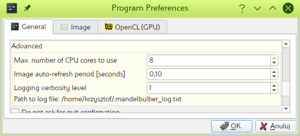
Figure 2.1: Settings for number of CPU cores and program priority
2.3. If you want to use your video card to make fractals (GPU and “OpenCL”)
Go up to File and click on Program Preferences, and then on the OpenCL (GPU) pane. Check on the OpenCL enable button.
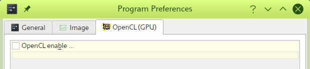
Figure 2.2: Enable OpenCL
Select Platform (NVidia or AMD) and Device. You can select multiple devices and cards by dragging across them or pressing Ctrl key and clicking each one. Each active card will be highlighted and will combine together to render as one unit. They can be different models and series but must be the same type (NVidia or AMD). Click OK.
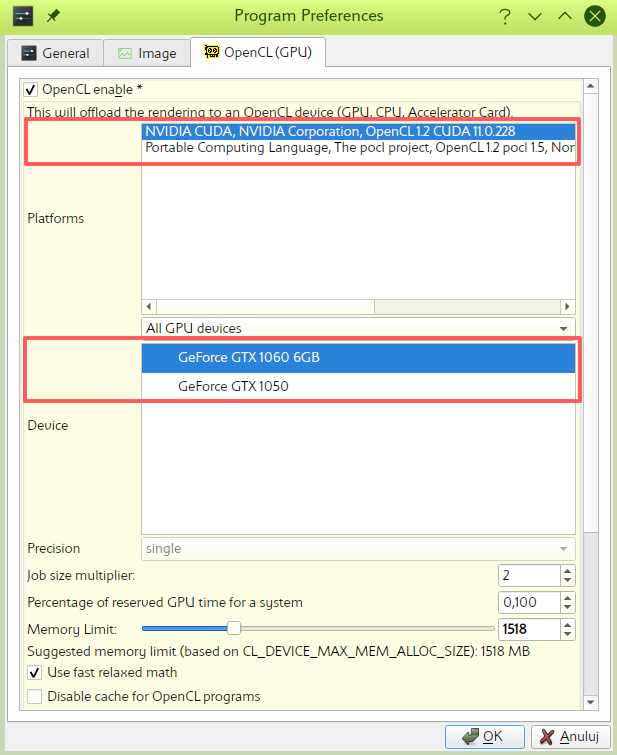
Figure 2.3: Select OpenCL platform and devices
Check that Navigation Pane/ OpenCL mode select is set to full (default).
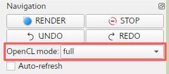
Figure 2.4: Opencl mode
Video Card Time-Out Delay Change. Change the time-out delay on your video cards by just navigating to wherever you installed Mandelbulber (most likely at C:\Program Files\Mandelbulber2) and right click on the file called TDR_disable or TDR_disable.bat and click Run as administrator. It will change the registry entry, and prevent crashes when running difficult renders.
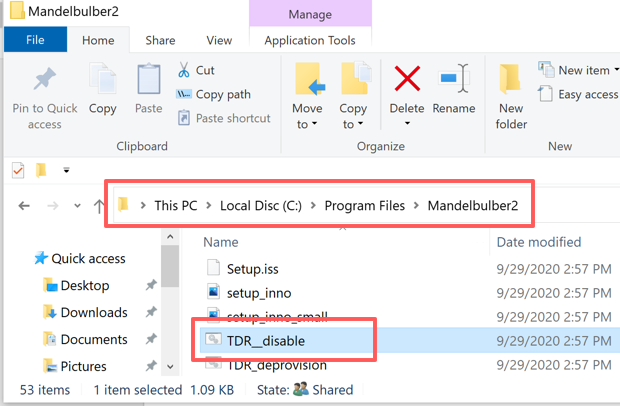
Figure 2.5: Script to disable GPU time-out Change Windows time-out delay to 30s (Click and then Merge Reg Entry) Why does this matter? By default, Windows sets up a time-out delay for video cards that's really short; because in game playing, more than a half-second delay in thinking means you've crashed, unlike in rendering. Many 3D softwares require this registry fix besides just Mandelbulber and it won't hurt your game playing. (Although if you actually crash in game playing, Windows will take longer to rescue you from it.)
2.4. Let’s review the major sections of Mandelbulber (“MDBB”)
See full user manual for more info on each pane. (CTRL + H will bring up User manual.) Top right to left.
Main View - actually rendered image
[Toolbar] - your custom presets (chapter qsg-toolbar)
Navigation pane - camera coordinates and navigation buttons (chapter navigation)
Animation pane (Flight or Keyframe) - tools for creating animations (chapter animation)
[Objects] - parameters of fractals and primitive objects
Material editor - parameters of actually selected material (chapter materials-parameters)
[Effects] - visual effects
Image adjustments - image resolution and settings
Rendering Engine - fractal calculation options and rendering quality settings
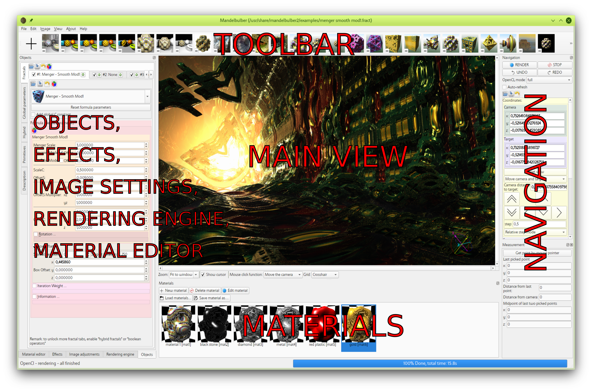
Figure 2.6: Major sections of Mandelbulber
2.5. Locate the RENDER, STOP, UNDO and REDO buttons
Locate the RENDER, STOP, UNDO and REDO buttons in the top of the Navigation Pane on the right side. Auto-refresh option is right below.
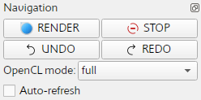
Figure 2.7: Render, stop, undo, redo and auto-refresh
RENDER button will start rendering the current settings, either via CPU or GPU.
STOP button will stop rendering.
UNDO button undoes last action and renders settings.
REDO button redoes last action and renders settings.
Auto-refresh will automatically render image whenever a change is made. Otherwise, image will not render unless RENDER button is clicked. (Or Render Animation, on the animation pane.)
2.6. Set image size
(Image Adjustment on the Settings Panes). Default size (800 x 600) is quick to render but low resolution. Select the Connect fractal detail level with image resolution checkbox so that your image doesn’t change when you resize it, when you want to render at larger size, but the fractal will not gain more details.
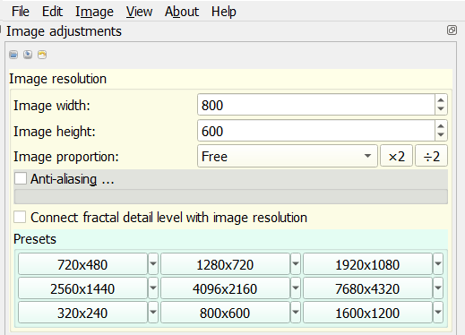
Figure 2.8: Image size options
2.7. Toolbar
Go up to View and select Show toolbar. You can also select Show animation dock if it’s not already showing. That’s all the windows we’ll need to get started.
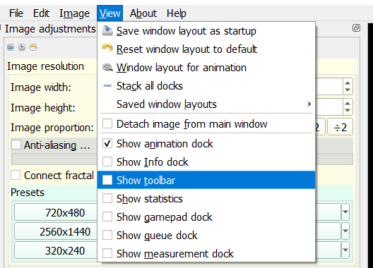
Figure 2.9: Show toolbar option
Click on any of the toolbar’s shape thumbnails to load it; hit render in navigation pane.
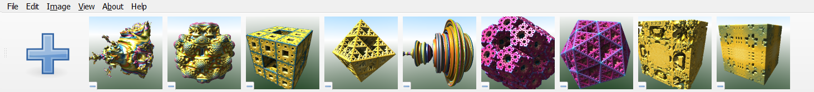
Figure 2.10: Example toolbar with presets
Clicking the giant plus will save current scene to toolbar and add a thumbnail to the bar.
2.8. Move around the fractal
Move by clicking Click on fractal in the Main View to move closer to where you clicked. The higher the value of the step size (in the Navigation Pane), the more you’ll move towards where you clicked. If you get lost or stuck, reload the scene from the toolbar, keyframes, or save files (see step 9 this guide), or hit the UNDO button. Hitting Reset view on the navigation moves camera away from fractal.
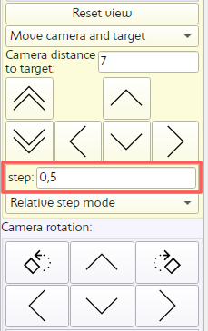
Figure 2.11: Navigation buttons with setting for movement step
Use navigation buttons to move (in the Navigation Pane)
Move camera (Up/Down, Left/Right, and Forward/Back)
Rotate camera (Pitch Up/Down and Yaw Left/Right)
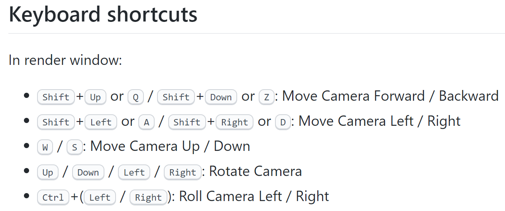
Figure 2.12: Keyboard shortcuts for camera movement and rotation
2.9. Navigation by Mouse Dragging
In most cases the easiest way of moving and rotating the camera is dragging the fractal by holding the mouse button and moving the mouse pointer.
Holding left mouse button - rotates camera by moving target.
Holding right mouse button - rotates camera around indicated point by moving camera and target.
Holding middle button - rotates camera by changing only the roll angle.
Holding left and right buttons - moves camera and target relatively to indicated point.
Holding control key and rotating mouse wheel - moving camera forward/backward towards indicated point.
2.10. Load/Save/Copy/Paste
Load example…. Go to File, Load example… Select one of the many examples, also in the subfolders by artist name, hit render and then look through the settings to see what is turned on and what things are set at. This is the best, easiest, and most fun way to learn Mandelbulber.
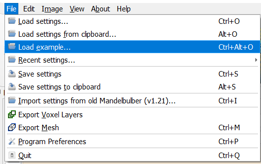
Figure 2.13: Load example option
Save and Load Settings. Go to File and then Save settings. Will save current scene and all keyframes and will remember most settings as you left them. Load settings will let you browse to a file you’ve saved and load it into memory, replacing current settings.
Load settings from clipboard… Mandelbulber settings can be printed out and copied as regular text. When you see Mandelbulber settings, they’ll look something like this format:
You can select the text with your cursor, starting with the first hash sign of #Mandelbulber settings file and all the way to the final semicolon, right click on it and select copy to put it in the Windows/system clipboard, and then go to Mandelbulber and File, and then Load settings from clipboard. Then hit render, or you can save the new file. When you load from clipboard, this will replace any current settings.
Save settings to clipboard. This is the reverse of Load settings from clipboard. Go to File and click Save settings to clipboard to load current MDBB settings into the Windows/system clipboard. Then, right clicking on a webpage or text document and then clicking paste will paste the settings as text, so that you can share with others.
2.11. Full User Manual
link – CRTL + H or by going up to Help. Also list of Hotkeys from the Help menu.
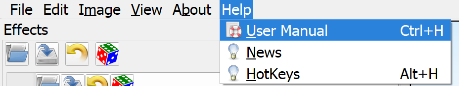
Figure 2.14: Help menu
2.12. Facebook Forum
Ask questions, show your works and see and learn from other’s creations, share your settings and tweak some from others, get feedback and encouragement (lots of encouragement!), troubleshoot issues or problems, chat with other fractalnauts, and have your mind blown by the incredible works of the Mandelbulber fractal art community.
There are a variety of YouTube Mandelbulber tutorials, from beginning to advanced.
“When all else fails, RTFM!” (Read The Full Manual) – Editor Steve
GO FORTH AND FRACTAL!
3. What are fractals?
Fractals are mathematical objects where the smaller fragments look similar to those on a larger scale (called self-similarity). A characteristic feature is that the mathematics often produce infinite levels of smaller fractal detail, such that viewing the detail is only limited by a computer's floating point accuracy used for the calculations
3.1. Mandelbrot set
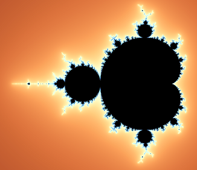
Figure 3.1: Mandelbrot Set
This is a typical example of a two-dimensional fractal generated mathematically. This image (figure mandelbrot_set) is created with a very simple formula, which is calculated in many iterations:
$$z_{n + 1} = z_{n}^{2} + c$$
z is a complex number (a + ib), where i is the imaginary number.
$$i = \sqrt{-1}$$ The number is made of two parts: a the real part and ib the imaginary part.
c is the original position of the image point to be iterated.
In 2D, z is a vector containing two complex number coordinates, x and y, (these points represent the pixel location where x represents the real part of the number [a] and y represents the imaginary part of the number [b]). Because they are complex numbers, they can be positive or negative, but also there will still be a mathematical solution if a function requires the square root of a negative number.
Each original point (pixel position) is tested in the formula iteration loop, to determine if it belongs to the formula specific mathematical fractal set.
The initial value of point z is assigned to equal c, $z_{0} = c$ ; this parameter is then used repeatedly in the iteration loop.
$z_{n + 1} = z_{n}^{2} + c$
$z_{n + 2} = z_{n + 1}^{2} + c$
$z_{n + 3} = z_{n + 2}^{2} + c$
etc.
To do this iterations should be repeated an infinite number of times. But since in practice a computer cannot infinitely repeat, Termination Conditions are applied to ensure the formula does not iterate to infinity. The most common conditions used are called Bailout and Maxiter.
Bailout tests to determine if a point entered into the iteration loop is divergent (trending infinitely outwards), as it will be unlikely to belong to the fractal set. Bailout condition stops the iteration loop if the formula
transforms (moves) the point further than a set distance away from the origin (typically in 3D, the center xyz coordinates being 0,0,0).
Maxiter is simply a condition to stop iterating when a maximum numbers of iterations is reached.
In the Mandelbrot formula, after each iteration, the modulus of a complex number is calculated; in other words, the length of the vector from the origin (x = 0, y = 0) to the current z point. This vector length is often called r for it is the radius from the center (origin) to the current z point.
In this example, when the length r > 2 (i.e Bailout = 2), the termination condition has been met, then the iteration process is stopped and the resulting image point is marked with a light color. When, after many repeated iterations, r is still less than 2, then it can be considered for simplicity that such a result will continue indefinitely. Iterations are therefore interrupted after a certain number of iterations (Maxiter). This point is marked on the image with black. This results in a ``set'' of points that do not reach bailout termination (black) and the rest of the points given lighter colors (dependent on a chosen coloring method).
With traditional 2D fractals, every point is given a color. With 3D fractals, only the points that are found to belong to the set, are given a color. One simple method is to assign a different color depending on the distance of the point from the origin.
3.2. Julia mode and c-pixel
The Mandelbrot set and Julia sets are closely related fractals that share the same iteration formula. The key difference lies in which variable is treated as a constant and which is varied across the image plane.
3.2.1. Mandelbrot set (c-pixel mode)
In the standard Mandelbrot set, the initial value z is set to zero $z_0 = 0$ and the constant c varies for each pixel:
$$z_{n + 1} = z_{n}^{2} + c_n$$
where $c_n$ is the complex coordinate of the pixel being rendered. Each pixel produces its own unique fractal sequence because c is different for every point. The resulting image shows which initial values of c remain bounded under iteration.
3.2.2. Julia set (Julia mode)
In Julia mode, the constant c is fixed to a single value j for the entire image, while the initial value z varies with each pixel:
$$z_{n + 1} = z_{n}^{2} + j$$
where $z_0$ is the complex coordinate of the pixel being rendered, and $j$ is the fixed Julia constant. Every pixel in the image follows the same iteration rule but starts from a different initial position.
3.2.3. Comparison
Mandelbrot (c-pixel)
Julia mode
Fixed variable
$z_0 = 0$
$c = j$ (Julia constant)
Varying variable
$c$ (pixel position)
$z_0$ (pixel position)
Iteration rule
$z_{n+1} = z_n^2 + c_n$
$z_{n+1} = z_n^2 + j$
One image
Many fractals
One fractal
The Julia constant is a 3D (or 4D) vector that replaces the c-pixel in the iteration formula. The constant multiplier controls the influence of the Julia constant. Different Julia constants produce dramatically different fractal structures while maintaining the same underlying formula characteristics.
Small changes in the Julia constant can produce both subtle variations and entirely different fractal structures. This makes Julia mode a powerful tool for exploring the relationship between Mandelbrot-style fractals and their corresponding Julia sets.
3.3. 3D fractals
The Mandelbulb three dimensional fractal is calculated from a fairly similar pattern to the Mandelbrot set. The difference is that the vector z contains three components (x, y, z) or four dimensions (x, y, z, w). As they are part of the z vector, they are denoted as (z.x, z.y, z.z). Examples being Hypercomplex numbers and quaternions.
They can also be created by modification of quaternions or by a specific representation of trigonometric vectors.
Generally, common math operators are used (e.g.: addition, multiplication, squaring, and power) and also conditional functions (e.g., ifz.x > z.y, thenz.x = something).
Some other types of 3D fractal objects are based on iterative algorithms (IFS - Iterated Function Systems). An example would be the famous Menger Sponge (figure menger_sponge) or Sierpinski triangle (figure sierpinski).
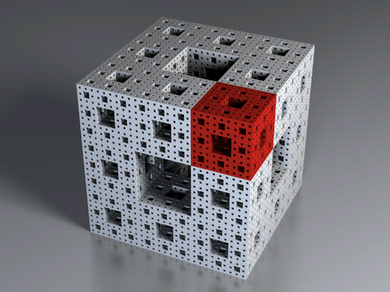
Figure 3.2: Menger Sponge
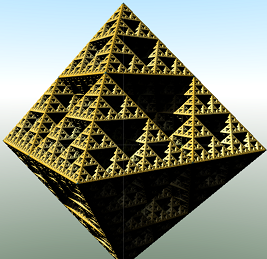
Figure 3.3: Sierpinski
3.4. Fractal families in Mandelbulber
Mandelbulber contains hundreds of fractal formulas organized into several families. Each family shares a common mathematical foundation but produces visually distinct results through variations in parameters and transformations.
The main families include:
Mandelbulb family — 3D extensions of the Mandelbrot set using spherical coordinates. Produces organic, bulbous structures with intricate surface detail. The power parameter is the most influential setting.
Mandelbox family — based on box and sphere folding transformations. Creates geometric, architectural-looking fractals with sharp edges and self-similar structures.
IFS (Iterated Function Systems) — formulas like Menger Sponge and Sierpinski Tetrahedron that produce self-similar structures through repeated affine transformations.
Kleinian and Pseudo-Kleinian — based on discrete groups of Möbius transformations, producing intricate, lace-like structures with deep detail.
Transforms — building blocks that can be combined in hybrid mode, including box folds, spherical folds, rotations, scales, and many specialized transformations.
Other families — including Scator, Buffalo, MandelTorus, Mandelnest, Riemann Sphere, and many more.
To explore the full list of available formulas, open the formula selector in the Objects dock. Formulas are grouped by family in the dropdown menu.
3.5. Mandelbulber Program
Mandelbulber is a free open-source application designed to render 3D Mandelbrot fractals called Mandelbulbs and other 3D fractals like Mandelbox, Amazing-Surf, Kleinian, Boxbulb, Juliabulb, Menger Sponge, Sierpinski, Quaternion, Riemann-Sphere, and more. There are a many built-in effects and the option to produce animated fractal video.
The following sections cover the program interface and other useful information about how to use the program.
4. Distance Estimation
Distance Estimation (DE) is the calculation of an estimated distance from the given point to the nearest surface of the fractal. As suggested by the word 'estimate', it is an approximate value. It is calculated using simplified algorithms based on analytical (Analytical DE) or numerical (Delta DE) calculations of gradients.
DE is the most important algorithm required to render three-dimensional fractals within a reasonable time. A ray is traced from the camera for each pixel (1000 x 1000 resolution = 1,000,000 rays). They match FOV from the camera eye (i.e., they are not parallel).
The DE provides an approximation of where along a ray the fractal surface should be located. This provides a starting point for stepping along the ray while looking for the surface location. The process of stepping along the ray and testing for the surface location, is called ray-marching.
Without the DE calculation, the proximity of the fractal surface would need to be repeatedly calculated after each of many very small steps along the ray from the camera. For example, without an estimate of where the fractal surface is, you may need up to 10,000 steps to trace a ray of light, for every pixel of the image.
Ray marching looks like the illustration below. In each step, an estimation on the distance to the nearest fractal surface is calculated. The calculation point is moved along the ray by this distance. The next step is re-calculated based on the estimated distance. This distance is smaller so this time the step is a smaller distance. The ray-marching becomes more accurate closer to the surface of the fractal. The ray marching ceases when a step moves the calculation point to be within a set ``distance threshold'' from the surface or after a maximum number of iterations if the option ``stop at maximum iteration'' is enabled.
Since the estimation contains some error (sometimes quite large), there is a risk that a step will be too large, and incorrectly step past the fractal surface. This may result in visible noise in the rendered image.
To prevent this, the step can be multiplied by a number between 0 and 1 (ray-marching step multiplier). Steps are then smaller, so there is less risk of ``overstepping'' the surface (better image quality), but the rendering time increases due to more steps being required (figure distance_estimation_defactor_1, distance_estimation_defactor_05).
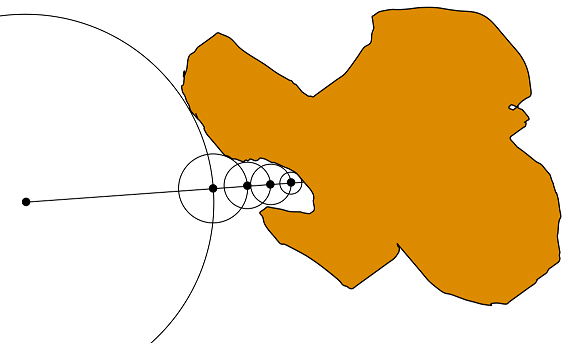
Figure 4.1: Distance Estimation with DE factor 1
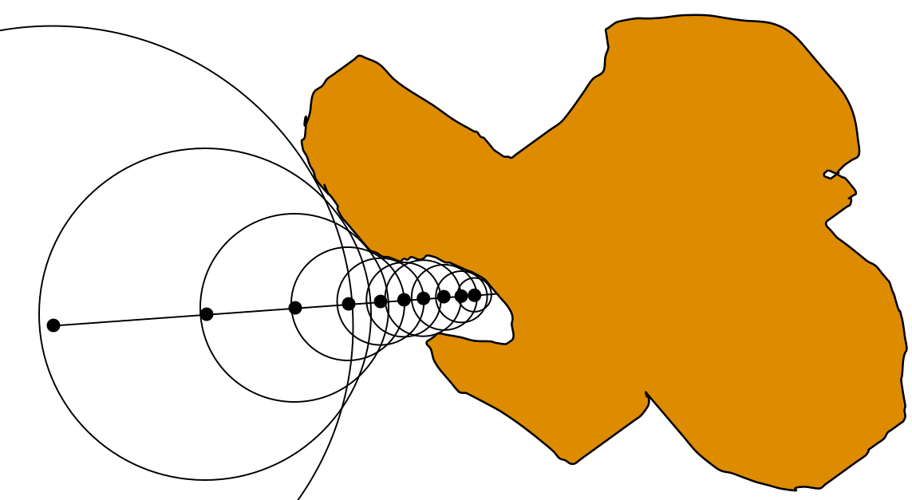
Figure 4.2: Distance Estimation with DE factor 0.5
4.1. Analytical DE vs Delta DE
Each formula is assigned a DE type: either Analytical DE or Delta DE.
Analytical DE computes the derivative of the fractal formula mathematically. It tracks the derivative of the iteration function alongside the point position, producing an accurate distance estimate. This mode is faster because the derivative is computed directly during iteration.
Delta DE approximates the derivative numerically by comparing the fractal function evaluated at two nearby points. This method does not require a hand-crafted derivative formula, making it more robust for formulas with complex or discontinuous transformations. However, it is slower because each evaluation requires computing the fractal function twice.
In most cases, Analytical DE produces good results and is the preferred mode for speed. However, with some formulas (particularly those with discontinuous folds or conditional transforms), only Delta DE will produce a correct image. If you observe artifacts or noise that cannot be fixed by adjusting the step multiplier, try switching to Delta DE.
4.2. DE Functions
When using DE (either Analytical or Delta), the final distance is calculated by combining the radius r (the distance of the final iteration point from the origin) with the computed derivative DE. The formula used depends on the DE function type, which is determined by the nature of the fractal's transformations:
Linear DE Used for formulas with linear transformations (e.g., Mandelbulb, Mandelbox). The distance is calculated as:
$$distance = \frac{r}{\lvert DE \rvert}$$
where r is the radius (distance from the origin to the final iteration point) and DE is the computed derivative.
Logarithmic DE Used for formulas with logarithmic transformations. The distance is calculated as:
$$distance = \frac{0.5 \cdot r \cdot \log(r)}{DE}$$
This function is applied when r > 1.0. For r $\le$ 1.0, the distance is set to 0.0.
IFS DE Used for IFS (Iterated Function System) formulas such as Menger Sponge and Sierpinski. The distance is calculated as:
$$distance = \frac{r - 2.0}{\lvert DE \rvert}$$
The constant 2.0 accounts for the specific scaling properties of IFS fractals.
Pseudo-Kleinian DE Used for Pseudo-Kleinian fractals. The distance is calculated as:
Custom DE Some formulas provide a custom distance calculation via the aux.dist auxiliary variable.
The automatic DE function is assigned based on the formula type. These settings can be overridden manually on the Render Engine tab if needed.
4.3. Linear DE offset
For hybrid fractals that mix mandelbox-type and IFS-type formulas, the Linear DE offset parameter adjusts the DE calculation. It is located in the Hybrids tab.
The offset modifies the linear DE formula as follows:
$$out.distance = \frac{r - offset}{\lvert DE \rvert}$$
The Linear DE offset is normally used in the range from 0.0 (mandelbox) to 2.0 (IFS). Adjusting this parameter can assist in fine-tuning the DE calculation when mixing these formula types in a hybrid fractal.
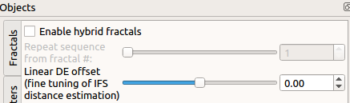
Figure 4.3: Linear DE offset parameter
4.4. Bad DE statistic
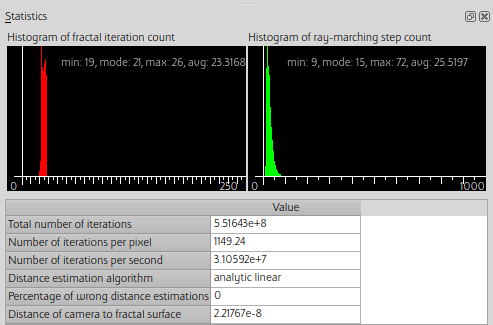
Figure 4.4: Statistics Tab with histogram data
In the Statistics (figure dock_statistic) (enable in View menu) you can see Percentage of Wrong Distance Estimations (``Bad DE''). The statistic is only available in no-OpenCL mode. This number is the percentage of image pixels which potentially have big errors in distance estimation calculation (estimated distance was much too high). It is visible as a noise on the image. As a general rule less than 0.01 is good, but it is case specific and 3.0 sometimes is OK and 0.0001 sometimes is not.
Figure bad_de_menger_sponge is an example of Bad DE due to over-stepping. It starts to occur at the corner nearest to the camera, resulting in the black areas and disintegration of the fractal. If the ray-marching step multiplier is set even higher, the fractal will entirely disintegrate. This disintegration will generally be reflected in the Percentage of Wrong Distance Estimations statistic.
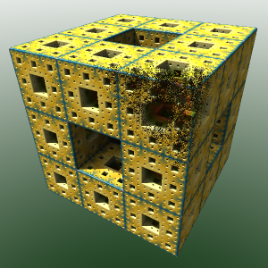
Figure 4.5: Example of over-stepping
4.5. Troubleshooting DE issues
If you observe artifacts or noise in your rendering, try the following:
Increase the ray-marching step multiplier (decrease the value) to reduce the risk of overstepping the surface.
Switch DE mode from Analytical to Delta (or vice versa) if the current mode produces incorrect results for the given formula.
Adjust the Linear DE offset when using hybrid fractals that mix mandelbox and IFS formulas.
Monitor the Bad DE statistic in the Statistics dock to check if DE quality improves after changes.
The quality produced by the DE mode and function combinations is formula-specific. The setting of formula parameters can also greatly affect the quality produced by the DE. In some cases the choice of fractal image is determined by what location and parameters can produce good DE quality.
5. Ray-marching - Maximum iterations versus distance threshold condition
The ray marching distance threshold is the condition where a ray point marching along the ray comes within a specified distance from the fractal surface and the ray-marching stops. This controls the size of the detail in the image, and is normally set to vary such that greater detail is obtained for the surface closest to the camera, while in the further regions of the fractal, the distance threshold will be larger such that only bigger details are visible. Enabling Constant Detail Size on the Rendering Engine tab will make the distance threshold uniform across the entire image.
For more information on Distance Estimation and its relationship to the distance threshold, see chapter distance-estimation.
There are two modes of controlling the ray-marching termination for each image pixel.
5.1. Mode 1: Stop at distance threshold (default)
When Stop at maximum iteration is disabled (default), ray-marching stops when the estimated distance to the fractal surface falls below the distance threshold. The distance threshold is calculated dynamically based on the distance from the camera and the Detail Level setting. This is the most efficient mode because the fractal iteration loop typically stops on the Bailout condition before reaching formula_maxiter (see page page bailout-maxiter), making rendering much faster.
5.2. Mode 2: Stop at maximum iterations
When Stop at maximum iteration is enabled, ray-marching no longer stops at the distance threshold. Instead, the detail level is controlled by the Max. fractal iterations (formula_maxiter) parameter. In this mode, the distance threshold is proportional to the distance from the camera, and the fractal iteration loop runs to the full formula_maxiter count on the fractal surface (when bailout is not reached).
Important note:Stop at maximum iteration does not control the fractal iteration loop directly. It controls the ray-marching termination condition. The fractal iteration loop always runs to achieve Bailout, then if bailout is not reached the iteration stops at formula_maxiter (see page page bailout-maxiter).
5.3. Comparison of the two modes
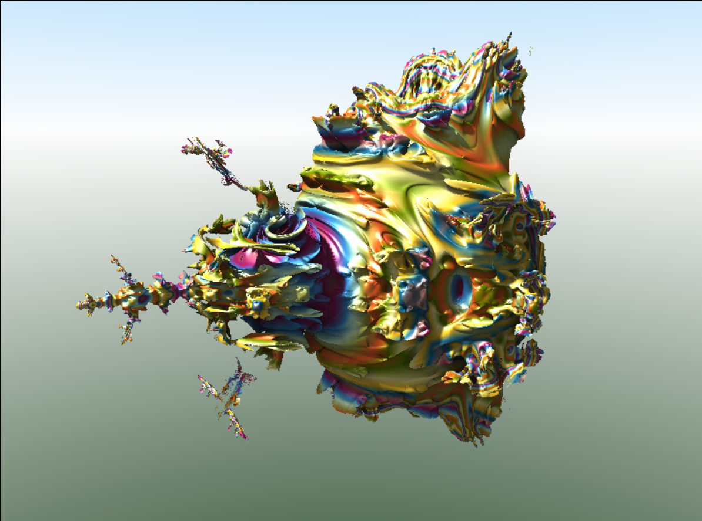
Figure 5.1: Mode 1: Stop ray-marching at distance threshold
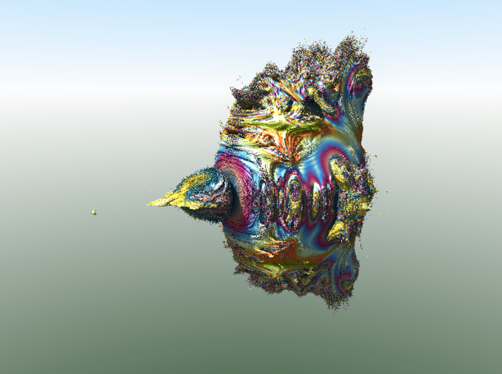
Figure 5.2: Mode 2: Stop ray-marching at Maxiter
In Mode 1 (left figure), ray-marching stops at the distance threshold. In most cases the fractal iteration loop stops on the bailout condition because away from the surface it is not possible to reach formula_maxiter. This makes rendering of fractals much faster.
In Mode 2 (right figure), ray-marching continues until the maximum number of ray-marching steps is reached (the ray-marching distance threshold is ignored). On the fractal surface, the maximum number of fractal iterations is calculated (when bailout is not reached).
5.4. Low formula_maxiter behavior
Figure stop-raymarching-at-bailout-low-maxiter shows what happens when formula_maxiter is set to a low value (e.g., 4). Even if formula_maxiter is reached, the ray-marching continues until the ray-marching distance threshold is reached (in Mode 1).
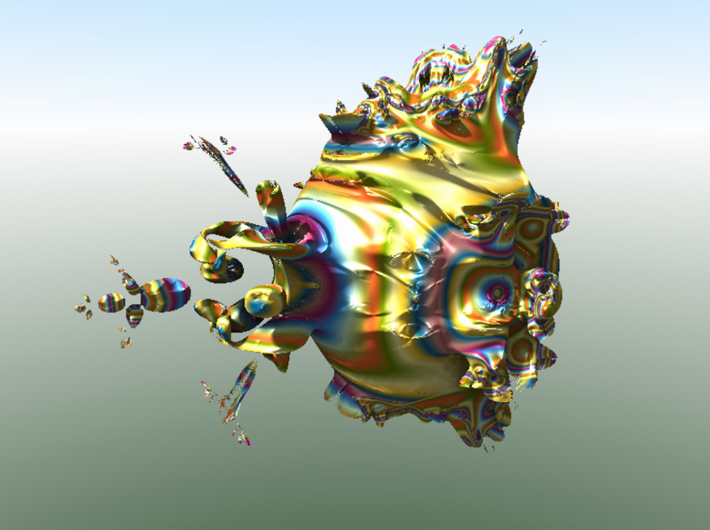
Figure 5.3: Mode 1: Stop ray-marching at bailout with low Maxiter
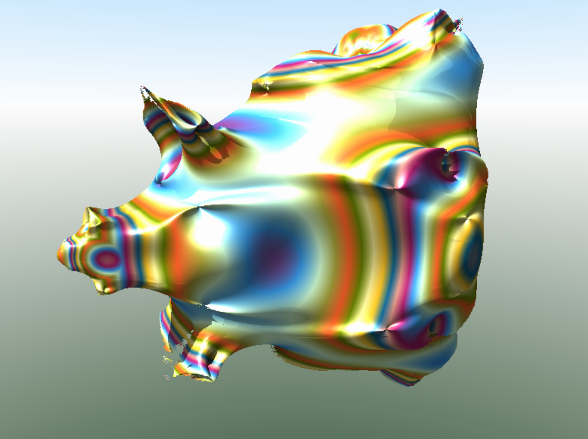
Figure 5.4: Mode 2: Stop ray-marching at maxiter with low Maxiter
5.5. Constant Detail Size
Enabling Constant Detail Size on the Rendering Engine tab will make the distance threshold uniform across the entire image. This takes longer to render, but gives a more accurate representation of detail at different distances, and can be used to address color variation over distance (figure constant_detail_size).
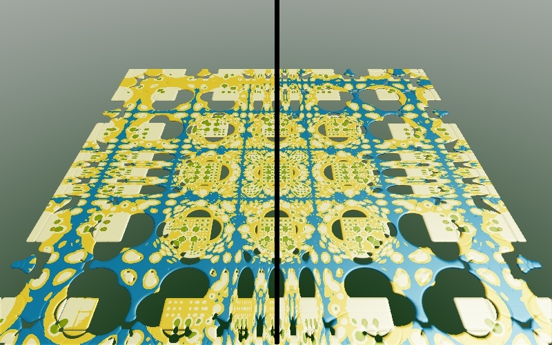
Figure 5.5: Constant detail size
6. Iteration loop
In section mandelbrot-set it was mentioned that fractals are calculated by repeating a formula (iterating) in an iteration loop. The integer i is used to represent the iteration count number.
The iteration count starts with i = 0, then at the end of each iteration, the count number is increased by 1, and the next iteration of the formula commences (e.g., iteration count 0, 1, 2, 3, ...). The iterating continues until termination conditions are met, which is either when the iteration count i = maxiter or when the bailout condition is achieved.
This section explains the calculations within the iteration loop.
A fractal formula is built from mathematical equations. These equations can be modifications of the Mandelbrot Set equation (e.g., Mandelbulb) and also other mathematical equations.
The equations are made from mathematical operators $+, -, *, /$ and can include mathematical functions (e.g., sin, cos, tan, exp, log, sqrt, pow, abs) and also mathematical conditions (e.g., if x > y then ``compute following equation(s),'' if i > 4 then ``compute following equation(s)'').
The equations are applied to vector z or any parts of z (i.e., the z.x, z.y and z.z components)
Examples:
z.x = fabs(z.x); is using the function fabs() (which is floating-point version of abs()), where z.x is assigned the absolute value of z.x.
if (z.x - z.y < 0.0) swap(z.x, z.y); is using the conditional function if() to determine if the values of z.x and z.y should be swapped.
z *= 3.0 is using the operator * to multiply all components of vector z by 3.0.
A set of equations that have a specific function within the formula are called transforms, e.g., rotation, scale.
Generally a formula is constructed from one or more transforms, which are constructed from equations.
With each iteration of the formula, the point being iterated is mapped (moved) to new coordinates as a result of the mathematical equations.
6.1. Single formula fractals
The simplest 3D fractals are calculated by iterating a single fractal formula. More complex fractals are made by iterating a mix of formulas, adding extra transforms, and/or including additional conditions.
Below there are 3 examples of fractals formulas written in C language code.
6.1.1. Mandelbulb Power 2
This formula is a modified Mandelbrot Set equation, expanded to 3D.
A cross section at $z_z = 0$ looks exactly the same as the Mandelbrot Set.
This formula is an Iterated Function System (IFS). It contains several
transforms, some of them conditions.
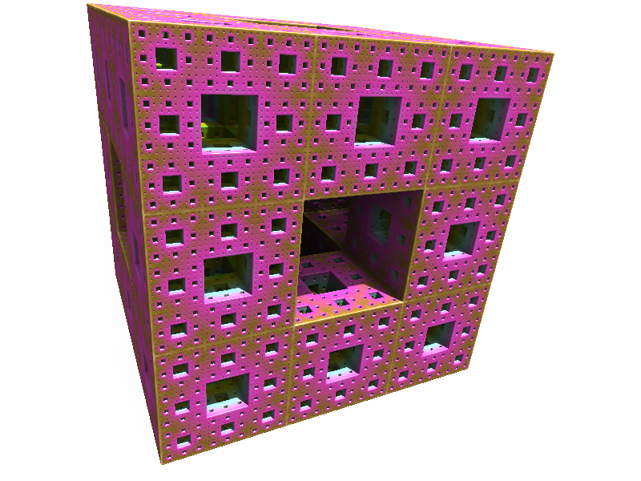
z.x = fabs(z.x);
z.y = fabs(z.y);
z.z = fabs(z.z);
if (z.x - z.y < 0.0) swap(z.x, z.y);
if (z.x - z.z < 0.0) swap(z.x, z.z);
if (z.y - z.z < 0.0) swap(z.y, z.z);
z *= 3.0;
z.x -= 2.0;
z.y -= 2.0;
if (z.z > 1.0) z.z -= 2.0;
Formula > Menger Sponge
6.1.3. Box Fold Bulb Pow 2
This formula is made from a set of different transforms. It is a good example of how a fractal formula can be more complicated than the Mandelbrot Set formula.
First part is a ``box fold'' transform which conditionally maps the point in x, y and z directions. Second part is a ``spherical fold'' which does conditional scaling in a radial direction. The end of formula is the same as Mandelbulb Power 2.
Single formula fractals are simply iterated several times until termination conditions are met, as shown in figure iteration_loops.
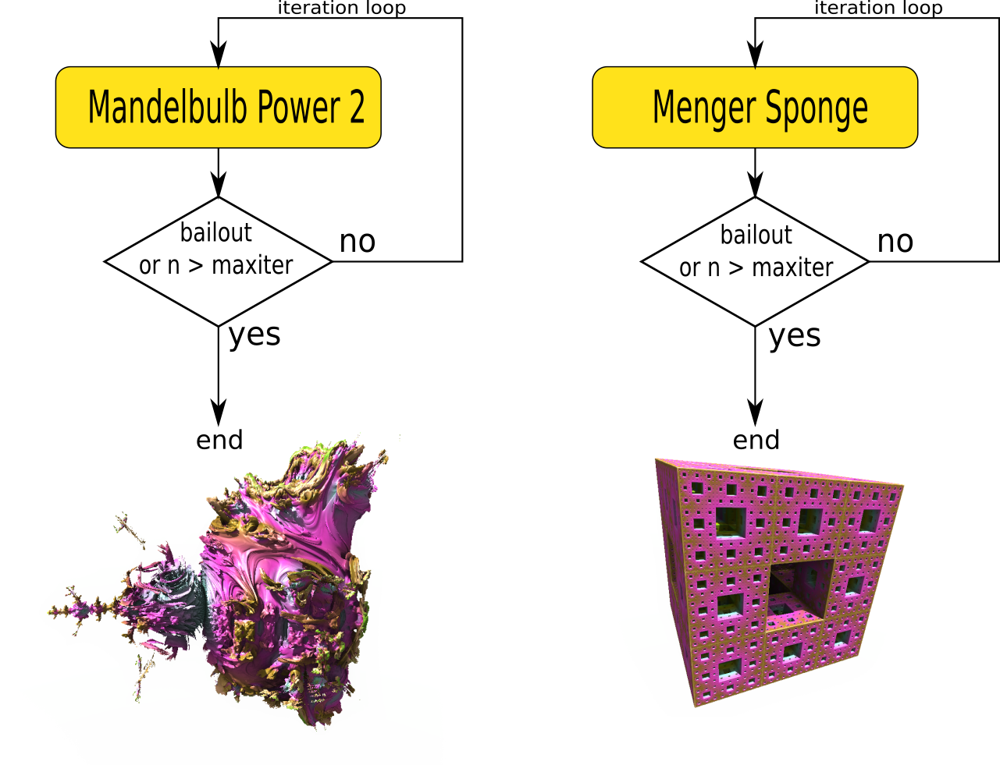
Figure 6.1: Examples of simple Iteration loops with one formula
When the calculation of the iteration loop finishes, the resulting final value of z is used to estimate the distance to the fractal body and to calculate the color of the surface.
6.2. Hybrid fractals
Hybrid fractals are constructed by using more than one formula in the iteration loop. This way new variations of fractal shapes can be achieved. There are many different fractal formulas and transforms available in the Mandelbulber program, which allows the user to create a vast variety of hybrid shapes.
The key concept is that the vector z is passed sequentially from one formula to the next. Each formula's FormulaCode() mutates z in-place, so the output z of formula N becomes the input z of formula N+1. This means each formula transforms the result of the previous one, creating complex combined shapes.
6.2.1. Iteration loop of hybrid fractals
In general hybrid fractals are calculated in a similar way to single formula fractals. The calculation consists of the iteration loop, maxiter and bailout condition. The difference is that when hybrid mode is enabled, a user can create a sequence of up to nine different fractal formulas (or transforms) inside the iteration loop.
By default the program works in single fractal formula mode, where you can only configure the parameters of the formula tab in the first slot (label #1) (figure fractal_tabs).
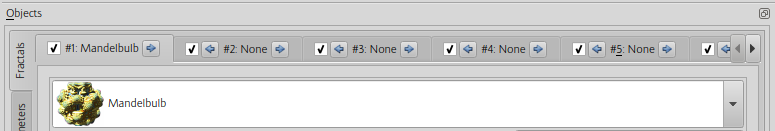
Figure 6.2: Fractal Tab - Formula only in first slot
There are two ways to enable Hybrid Fractals Mode:
Click in any slot with a number higher than one. The program will ask if you want to enable hybrid fractals or boolean mode. Select Enable hybrid fractals.
Go to Objects / Hybrid tab. Tick Enable hybrid fractals checkbox.
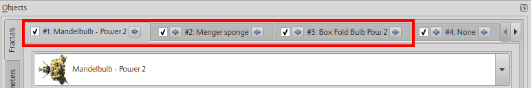
Figure 6.3: Fractal Tab - Multiple formula slots filled
Once hybrid fractals mode has been enabled, a user can select additional formulas from the dropdown menus in any of the nine formula slots, as shown in figure fractal_tabs_with_defined_fractals_tabs_highlighted. In this figure, Mandelbulb – Power~2 is selected in slot #1, Menger Sponge in slot #2 and Box Fold Bulb Pow 2 in slot #3.
These formulas will be used in the next examples. They will be processed in the loop as it is showed on figure iteration_loop_hybrid.
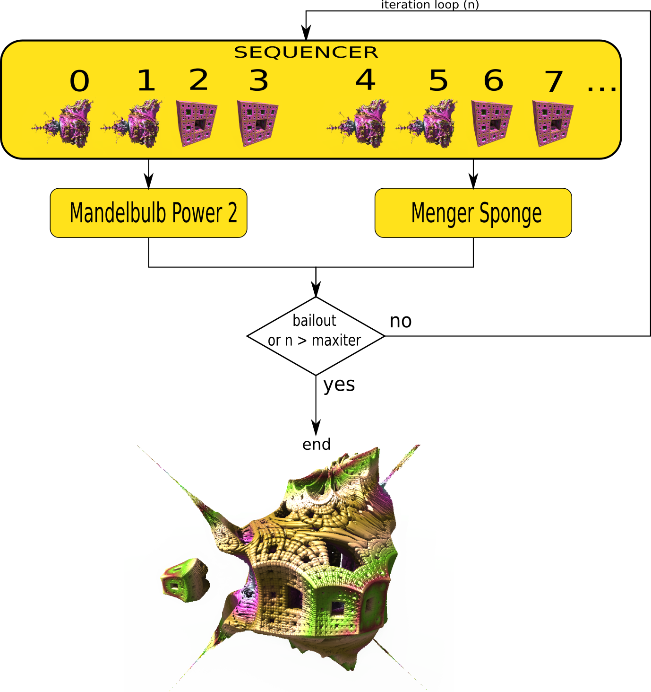
Figure 6.4: Complex Iteration loop with hybrid fractal
Each formula's parameters can be configured in the formula tab opened in an enabled slot.
The sequence of formula execution is determined by the following parameters available on each formula slot:
Formula – which fractal formula to use in this slot
Iterations – how many consecutive iterations this formula runs before advancing to the next slot (default: 1)
Start at iteration – the earliest global iteration number when this formula becomes active (default: 0)
Stop at iteration – the latest global iteration number when this formula is active (default: 250)
Order – which slot the sequence wraps back to when it reaches the end (default: 1)
The sequence is generated at scene setup time and maps each global iteration number to a formula slot. The maximum sequence length is 1250 iterations. During rendering, the iteration loop simply looks up which formula to apply for each iteration index.
6.2.2. One iteration for each slot
The simplest way to create a hybrid fractal is a sequence where formulas are calculated one after another, then the sequence is repeated until termination conditions are met.
In figure iteration_loop_hybrid_sequence_1, the sequence consists of one Mandelbulb – Power~2, one Menger Sponge and one Box Fold Bulb Pow 2. The length of the sequence is three iterations; so after every third iteration, the sequence repeats from the first slot. The numbers shown are the Iteration Count, starting at i = 0. The count increases by 1 after every iteration performed in the iteration loop.
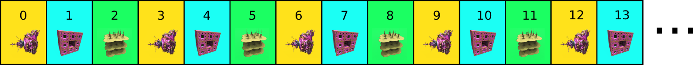
Figure 6.5: Hybrid sequence - Simple sequence using three different formulas
The color coding in the above figure indicates which formula is active:
Yellow – slot #1 (Mandelbulb – Power~2)
Cyan – slot #2 (Menger Sponge)
Green – slot #3 (Box Fold Bulb Pow 2)
This sequence gives a shape combining properties of all three formulas, see figure hybrid_sequence_example_1.
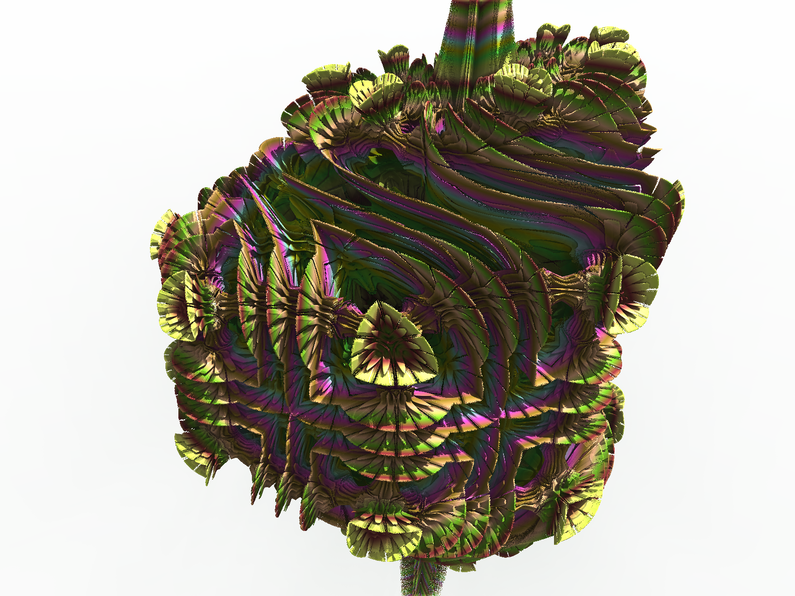
Figure 6.6: Hybrid sequence result - Simple sequence using three different formulas
Because the first iteration is (slot #1) Mandelbulb – Power~2, the general shape of the fractal will be similar in shape to the Mandelbulb – Power~2.
Note: Generally, the first few iterations of a fractal strongly influence the final hybrid fractal shape.
In the next iteration, the Menger Sponge formula is used. A single iteration of this formula produces the shape of figure single_iteration_of_menger_sponge.
Figure 6.7: Single iteration of the Menger Sponge
Some features of this shape are transferred to the generated shape of the hybrid fractal.
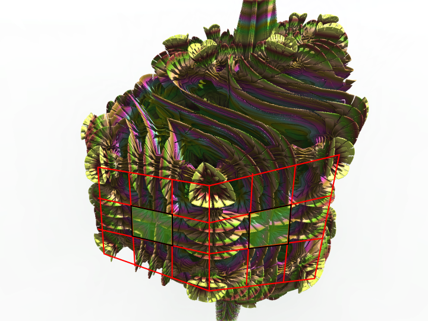
Figure 6.8: Hybrid with Menger Sponge features marked in red
Figure 6.9: Hybrid close up of leaf-like shapes produced by 'Box Fold Bulb Pow 2' formula
6.2.3. More iterations for each slot
With each slot a user can define how many times each fractal formula will be used in the sequence. On each of the formula tabs there is a parameter named Iterations which is set to 1 by default. This is the number of iterations (repeats) of the formula performed before the loop moves on to the next formula slot in the sequence. If this value is increased to 2 on the first and second formula slots in our example, then the sequence of the formulas will be as shown in figure iteration_loop_hybrid_sequence_2.
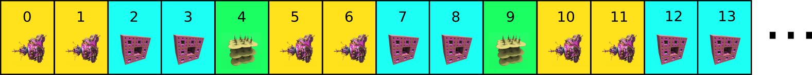
Figure 6.10: Hybrid sequence - The first and second slots set to 2 repeat iterations
The first and second formulas are repeated twice and the third formula only once. The resulting fractal shape is shown in figure hybrid_sequence_example_2:
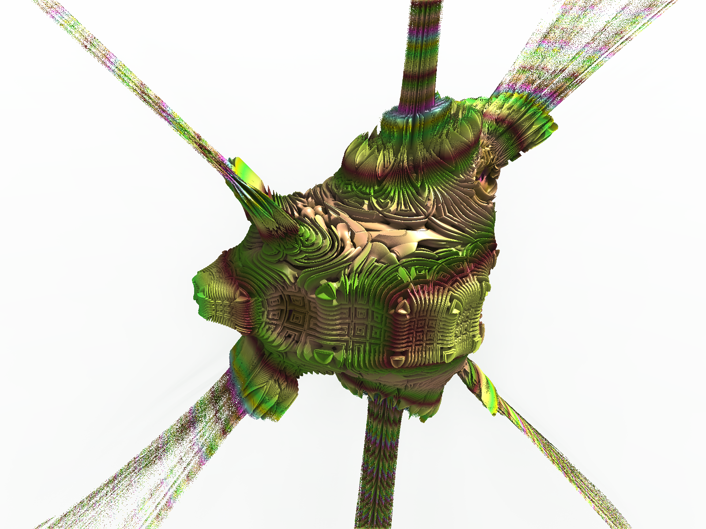
Figure 6.11: Hybrid sequence result - The first and second slots set to 2 repeat iterations
Because the Mandelbulb – Power~2 calculation is repeated for two iterations at the beginning, the shape of this initial formula strongly influences the final shape of the hybrid fractal.
If the parameter Iterations on the second slot is set to 10, then the Menger Sponge formula is used from iteration 2 to iteration 11 (figure iteration_loop_hybrid_sequence_3).
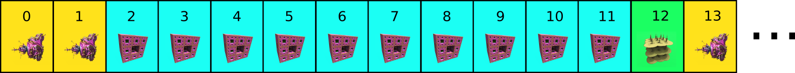
Figure 6.12: Hybrid sequence - The second slot set to 10 repeat iterations
As above, the initial shape is mainly defined by the first two iterations of Mandelbulb – Power~2, but the high number of Menger Sponge iterations makes the Menger Sponge features become more apparent (figure hybrid_sequence_example_3).
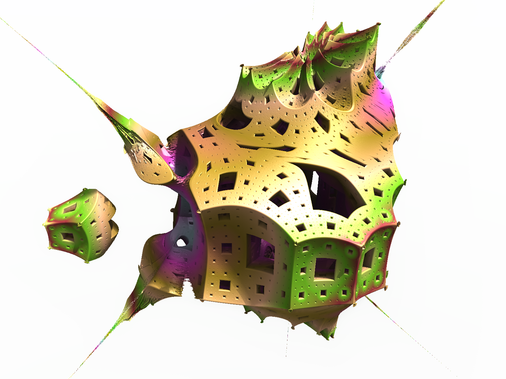
Figure 6.13: Hybrid sequence result - The second slot set to 10 repeat iterations
6.2.4. Range of iterations for slot
The sequences can become more complicated by specifying the range of iterations when a formula will be calculated in the loop.
On each formula tab the parameters Start at iteration and Stop at iteration are used to define this range.
When computing the iteration loop, the program walks through the enabled formula slots, checking formula iteration range conditions. If the current global iteration number is within the range, then a calculation of that formula is performed and the global iteration count is increased by 1. If the global iteration number is outside the iteration range condition, then the formula is skipped (i.e., no calculation is performed for this slot), but the global iteration count still increments. The program then moves to the next enabled slot in the sequence.
The second formula slot (Menger Sponge) in the sequence shown in figure iteration_loop_hybrid_sequence_4, has the iteration range set to from 4 to 250.
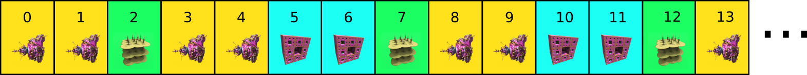
Figure 6.14: Hybrid sequence - Range of iteration set to 4-250 on second slot
During the first pass of the sequence, the Menger Sponge formula could not be used at iterations 2 and 3, because Start at iteration was set to 4 for this formula, and therefore the slot was skipped. During the second pass of the sequence, the Menger Sponge formula was used at iterations 5 and 6, because those iterations were inside the defined range of iterations.
Figure 6.16: Fractal tabs with highlighted tab-arrows
These buttons swap the fractal tabs between the slots, and therefore the formula's position inside the sequence will change. All formula parameters setting are moved in the swap.
Figure 6.18: Hybrid sequence render - Swapped tab one and two
Now the first Menger Sponge formula creates the initial shape of the fractal, and Mandelbulb – Power~2 only modifies the details.
Even if the same fractal formulas are used in each slot, and for the same number of iterations, the final shape will strongly depend on the parameter settings of the first few formulas that are iterated in the sequence.
There are also a few formulas and transforms which have a very strong influence on the final shape, and these are often run for just 1 or 2 iterations during the iterating of the fractal.
6.2.6. Formula weight (blending)
Each formula slot has a Formula Weight parameter (range 0.0 to 1.0) that controls how much the formula's output contributes to the result. When the weight is less than 1.0, the output is smoothly blended between the formula's result and the previous state of z. This allows for gradual transitions between formulas and can produce unique visual effects.
6.2.7. Order (repeat from)
The Order parameter (labeled repeat_from internally) determines where the sequence wraps back to when it reaches the last formula slot. The value ranges from 1 to 9, where 1 means the sequence restarts from the first formula (default behavior). Setting it to 2, for example, makes the sequence wrap back to the second formula instead, creating a pattern like: A, B, C, B, C, B, C, ...
This parameter affects the long-term structure of the hybrid fractal and can be used to create asymmetric or repeating patterns.
7. Navigation
To set the current view there are two elements:
[Camera] represents a point where the camera is located.
[Target] represents the point onto which the camera will focus (the
camera is always looking at the target.)
The camera_top vector defines the upward direction of the camera. This vector is automatically updated when the camera is rotated. It is exposed in the keyframe animation editor but not in the main navigation controls.
7.1. Navigation by mouse pointer dragging
In most cases the easiest way of moving and rotating the camera is dragging the fractal by holding the mouse button and moving the mouse pointer.
Left mouse button rotates camera by moving target
Right mouse button rotates camera around indicated point by moving camera and target
Middle button rotates camera by changing only the roll angle
Left + right buttons moves camera and target relative to the indicated point
Control key + mouse wheel moves camera forward/backward towards indicated point
7.2. Camera and Target movement step
The relationship between the camera point and the target point can be altered manually by changing the numbers in the edit fields, or by navigating with distance and rotation ``steps'' defined by the user.
For rotations, the camera is moved by the parameter rotation step (default 15 degrees). For movements of the camera and/or the target in a linear direction, the parameter step (default 0.5) is used. There are two modes for its use:
7.2.1. Relative step mode
The step for moving the camera and/or target in a linear direction is calculated relative to the estimated distance from the surface of the fractal. The closer to the surface that the camera is located, the smaller the step. This prevents the camera moving to a location beneath the surface of the fractal.
The actual step is equal to the distance from the fractal multiplied by the parameter step.
Example: If the step is set at 0.5 and the nearest point of the fractal is 3.0, the camera will be moved 1.5 (no matter in which direction).
Relative step mode makes navigation easier, because a user does not need to think about the movement size required to avoid the camera moving into the fractal.
In animations this mode is recommended when camera is approaching the surface of the fractal.
7.2.2. Absolute step mode
Step movement of the camera and/or target is fixed. Therefore if the step is set at 0.5, the movement will be 0.5 in the direction of the arrow key or mouse pointer.
This mode is recommended for flight animation with the camera flying at a fixed (or strictly controlled) speed.
7.3. Linear camera and target movement modes using the arrow buttons
A user can navigate by operating the arrow buttons on the Navigation dock, with the user defined steps.
The Camera movement mode parameter controls the relationship between camera and target during arrow key navigation. It has three modes:
Fixed distance move camera and target together (default)
Move camera move only camera
Move target move only target
These modes are available in the Navigation dock.
7.3.1. Move camera and target mode
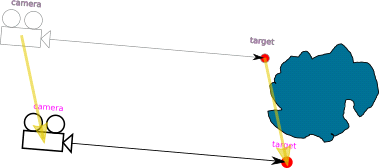
Figure 7.1: Movement mode - camera and target
Arrows move both the camera and the target by the same distance in the same direction. The angle of camera rotation does not change (figure move_camera_and_target).
7.3.2. Move camera mode
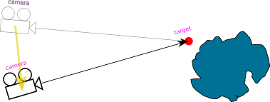
Figure 7.2: Movement mode - camera
Moves only the camera and rotates it in respect to the motionless target (figure move_only_camera).
7.3.3. Move target mode
Figure 7.3: Movement mode - target
Moves only the target while maintaining a fixed camera position (figure move_target). The camera rotates following the target.
Note: In Relative Step Mode, the target is moved by a distance related to the distance of target to fractal surface. If the target is inside the fractal (distance = 0), then this option will not work with Relative Step Mode.
7.4. Linear camera and target movement modes using clicks on image
A user can move the camera by selecting a point on the image with the mouse pointer, and then using either left mouse button (move forward) or right button (move backward).
This feature is controlled by the click mode setting. When click modes are enabled, clicking on the rendered image initiates camera movement toward the clicked point.
7.4.1. Move camera and target mode
The target is moved to the point selected by the mouse. The camera is moved towards selected point by a user defined step, and rotated.
In relative step mode, the camera is moved by distance equals to distance_to_indicated_point multiplied by step parameter.
In absolute step mode, the camera is moved by distance equals to step parameter.
7.4.2. Move camera mode
The camera is moved by the step (absolute or relative) in the direction of the mouse pointer, rotating the camera to look at the target. The target remains stationary.
7.4.3. Move target mode
The target is moved to the point selected by the mouse. The camera remains at the same point but rotates following the target.
7.5. Camera rotation modes using the arrow buttons
7.5.1. Rotate camera
Figure 7.4: Rotation mode - around camera
The camera is rotated by the rotation step around its axis and the target is moved accordingly (figure rotate_camera). This is the standard mode for rotating the camera.
7.5.2. Rotate around target
Figure 7.5: Rotation mode - around target
The camera is moved around the stationary target by the rotation step, maintaining a constant distance to the target. The camera is rotated to look at the target.
7.6. Reset View
Reset View zooms the camera out from the fractal while maintaining the camera's orientation (angles). The target is reset to $0, 0, 0$ and the camera is positioned along the current forward vector at a distance calculated by scanning the fractal size in multiple random directions.
If the rotations are changed to zero before using Reset View, the camera will then be zoomed out from the target, and rotated to look down the y axis.
7.7. Calculation of rotation angle modes
The Rotation mode parameter (labeled in the Navigation dock) controls how rotation angles are calculated. It has two options:
7.7.1. Fixed roll angle
In this mode, the angle gamma (roll) is constant. Pan the camera left or right always takes place around the global vertical Z-axis (not the render window vertical axis).
This mode can be likened to an aircraft's controls, where all turns are relative to the aircraft's axis, not the ground below. Rotate up / down raises / lowers the nose of the aircraft. Rotate left / right turns in the directions of the wings. Tilting the camera buttons
Figure 7.1: tilts the aircraft.
When the camera is pointing straight up or down, or when it is upside down in this mode, it is quite difficult to predict the result of the turn.
7.7.2. Straight rotation
The camera is rotated around its own local axis (local vertical axis is the render window vertical axis.)
This mode is a more intuitive way to rotate the camera, e.g., turn the camera left always gives the visual effect of the camera rotating in that direction. The rotation angles are automatically converted so they are appropriate for the selected direction. This mode changes the gamma angle (roll).
7.8. Keyboard shortcuts
The following keyboard shortcuts are available for camera navigation (default bindings, configurable in settings):
[Q] move forward
[Z] move backward
[A] move left
[D] move right
[W] move up
[S] move down
Left arrow rotate left
Right arrow rotate right
Up arrow rotate up
Down arrow rotate down
7.9. Camera rotation in animations
With animation, the camera point and the target point can move independently following their own trajectories, with the camera always looking towards the target point. It is important to be aware that the rotation angle of the camera is the result of the camera coordinates and the target coordinates.
There are various ways of animating, depending on the objective.
The following example is a flight animation, with the camera trajectory approaching a location, with the camera rotating simultaneously so that the location is always observed, (as shown in the figure camera_target_tracking). The camera positions represent three keyframes.
Figure 7.6: Keyframe Animation with differing distances camera to target
Between the first and second keyframes, the camera and target both move large distances. But between the second and third keyframes, the camera moves a much greater distance than the target. This can sometimes lead to unexpected camera rotations between keyframes.
To compensate for this, on the Keyframe navigation tab use the button Set constant target distance. This adjusts all keyframes by setting a constant distance between camera and target. It is important to note that the use of this function does not change the visual effect for the keyframes, and will help correct interpolation. See figure camera_target_tracking_2.
Figure 7.7: Keyframe Animation with equal distances camera to target
8. Materials
8.1. Defining and assigning materials
A material defines the appearance of the surface and volume of an object and can be used to give an object an interesting or even a realistic look. A material in Mandelbulber can consist of plain colors, colors generated by fractal properties, or colors from external texture files. A material can also define physical properties of an object like transparency, reflectance, roughness or luminosity.
In the program, materials can be defined as distinct entities which can be assigned to multiple objects. In the easiest scenario, only one material could be used for all objects.
All defined materials are visible in the Materials dock (figure materials_dock). From this window the user can manage the materials.
Figure 8.1: Docked window with defined material
Clicking on a chosen material will bring up the Material editor, where all material properties are visible.
The following options are available in this dock:
New material – add new definition of a material
Delete material – delete selected material
Edit material – open separate window with Material editor
Load material – open file selector for loading an already-defined material
Save material as – open file selector for saving a material into a file
A material can be assigned to different types of objects: main fractal, boolean fractals or primitives. One material can be assigned to many objects. For every object, there needs to be one assigned material.
8.1.1. Assigning material to main fractal
To assign a material to the main fractal object, go to Objects dock and Global parameters tab (figure materials_assign_to_main_fractal). Clicking on the material icon will bring up the Material manager window where the material can be selected. This selected material will be associated with the main fractal object. Further changes of the material properties in Material editor will directly affect all objects with this assigned material. Figure 8.2: Material icon in Global parameters
8.1.2. Assigning material to primitive object
To assign a material to a particular primitive object go to Objects dock and Primitives tab. Below the parameters of this primitive there is an icon for the material selection (figure materials_assign_to_primitive).
Figure 8.3: Material icon in definition of primitive object
8.1.3. Assigning material to one of the fractals in boolean mode
To assign a material to a particular fractal when the boolean mode is enabled, go to Objects dock and Fractals tab. Then go to the formula tab of the fractal, which should be assigned with the material. The selection of the material is located below the fractal formula parameters (figure materials_assign_to_boolean).
Figure 8.4: Material icon below fractal formula parameters in boolean mode
8.2. Editing parameters of materials
The parameters of a material can be edited in the Material editor dock. On the top of the material editor is a real-time preview of the material and the name of the material. The name can be edited freely for easier identification of the material.
8.3. Gradients
Gradients can be applied to fractal objects. If a material with gradients is assigned to a primitive object, then the gradient will be ignored and the plain color is used instead (parameter Surface color) – see figure materials_gradient_on_primitive.
Figure 8.5: Gradient applied to fractal and primitive objects
8.3.1. Gradient editor
For every parameter which uses a gradient, there is the same type of gradient editor. A gradient can have up to 100 intermediate colors. The first and the last color are always the same, because the gradient is repeated in a loop.
Defined colors (1) – colors used in the gradient. A double click on the color opens a window where the color can be changed. The color box can be moved along the gradient (only the first and last color cannot be moved.)
Randomize colors (2) – randomizes all colors in the gradient.
Randomize all (3) – randomizes the number of colors, their positions and the colors.
Increase brightness (4) – increases brightness of all colors.
Decrease brightness (5) – decreases brightness of all colors.
Invert (6) – inverts all colors.
Increase saturation (7) – increases saturation of all colors.
Decrease saturation (8) – decreases saturation of all colors.
Right click on the gradient opens the context menu which has the following options:
[Add] – adds new color box in the position of mouse pointer.
[Remove] – removes color box in the position of mouse pointer.
Delete all – deletes all colors from the gradient. Only the first and last color are kept.
Change number of colors – changes number of colors with recalculation of color boxes.
Grab colors from image – opens file selector to choose an image from which colors will be extracted.
Load colors from file – opens file selector to choose a text file with an already-defined gradient.
Save colors to file – opens file selector where gradient will be saved as a text file.
[Copy] – copies gradient to clipboard. This can be used to copy all colors from one gradient to another one, (e.g. to use the same colors for transparency as used for surface color.)
[Paste] – pastes gradient from clipboard.
8.3.2. Gradient common options
Gradients are used in the material when the Use colors from gradients option is enabled. This option can be found in the Material editor for each gradient channel. Gradients can be used for the following channels: surface color, specular highlights, diffuse, luminosity, roughness, reflectance and transparency.
All of the channels have the following common settings:
Figure 8.10: color speed = 0.25Figure 8.11: color speed = 1Figure 8.12: color speed = 4
8.3.3. Coloring orbit trap algorithms
Option Coloring algorithm allows the selection of the orbit trap algorithm which will be used to distribute colors. These algorithms use particular properties of the fractal calculation (results of orbit trap algorithms.)
[Standard] – color index is calculated as the length of z vector
$c = |z|$
Figure 8.13: Standard coloring algorithm
orbit trap: z.Dot(point) – color index is calculated as the dot product of z vector and point coordinates
orbit trap: Sphere – color index is calculated as the distance of z vector from a sphere of the radius defined by the parameter Orbit trap sphere radius
orbit trap: Cross – color index is calculated as the distance of z vector from a cross shape orbit trap
$c = \mathrm{min}(|z.x|, |z.y|, |z.z|)$
Figure 8.16: orbit trap: Cross coloring algorithm
orbit trap: Line – color index is calculated as the dot product of z vector and a direction vector d defined by Orbit trap line direction vector
$c = |z \cdot d|$
Figure 8.17: orbit trap: Line coloring algorithm (direction vector 0;0;1)
4D orbit trap color. Enables 4D orbit trap algorithms. Result varies depending on the 4D fractal chosen and which orbit trap algorithm is used.
Pre-V2.15 orbit trap color. Enables backwards compatibility. In version 2.15, changes were made to make orbit trap calculations the same for both OpenCL and Non-OpenCL.
8.3.4. Gradient for surface color
Gradient for surface color defines the color channel for the fractal surface. It is the default method of coloring fractals.
Figure 8.18: Color gradient for fractal surface
8.3.5. Gradient for specular highlights
Gradient for specular highlights defines the colors of the specular effect. More details about this effect are in chapter materials-specular.
Figure 8.19: Gradient for specular effect colors
8.3.6. Gradient for diffuse
Gradient for diffuse defines the intensity of the diffuse channel. A brighter gradient causes stronger light diffusion, which means wider specular highlights and less visible reflections. More details about specular highlights are in chapter materials-specular
Figure 8.20: Gradient for diffusion channel
8.3.7. Gradient for luminosity
Gradient for luminosity defines the intensity of the luminosity channel. This property is enabled when the luminosity parameter has a value greater than zero. More details about luminosity are in chapter materials-luminosity.
Figure 8.21: Gradient for luminosity channel with enabled Monte Carlo Global Illumination and luminosity = 10
8.3.8. Gradient for roughness
Gradient for roughness defines the intensity of the roughness effect. This property has an effect when Rough surface is enabled. More details about roughness are in chapter materials-roughness.
Figure 8.22: Gradient for roughness intensity
8.3.9. Gradient for reflectance
Gradient for reflectance defines the amount and color of the reflected light. This property is enabled when the Reflectance parameter is greater than zero. More details about reflectance are in chapter materials-reflectance.
Figure 8.23: Gradient for reflectance color and intensity
8.3.10. Gradient for transparency
Gradient for transparency defines the color of transparency and opacity. This property is enabled when the Transparency parameter is greater than zero. It is recommended to use bright colors in the gradient for transparency. More details about transparency are in chapter materials-transparency.
Figure 8.24: Gradient for transparency color - example of bright colors to get high transparency
Figure 8.25: Gradient for transparency color
8.4. Surface color
This property defines the base color of the object. This color is used when the surface color gradient is disabled or when the material is applied to a primitive object.
Figure 8.26: Different surface colors
The option Use color texture from an image allows the surface of objects to be covered with a colored texture from an image. More details about texture mapping are in chapter materials-textures
Figure 8.27: Objects with color texture
Surface color (from color box) can be mixed with the color texture from an image file. The strength of the image influence can be adjusted with texture intensity parameter.
Figure 8.28: Different colors mixed with color textureFigure 8.29: Reduced intensity of color texture to 0.5
8.5. Shading
When shading parameter is 1.0, then the surface brightness depends on the angle of incidence of light. Decreasing this parameter reduces the strength of this rule. When it is 0, then the surface color has the same brightness at every angle.
Specular highlights are bright spots of light that appear on shiny objects when illuminated. This effect is very fast to calculate compared to light reflections. Specular highlights provide a strong visual cue for the shape of an object and its location with respect to light sources in the scene. There are two types of highlights in Mandelbulber, which can be used simultaneously:
Plastic specular reflections where the color is the same as the light source color and do not depend on the surface color
Metallic specular reflections where the color is a mix of the light source color and the surface color
Figure 8.33: no highlightsFigure 8.34: plasticFigure 8.35: metallic
The following parameters are used to define the appearance of the specular highlights
Specular highlight color adds color to highlights
Figure 8.36: Different colors of specular highlights
Specular highlight brightness controls the visibility of the highlights
Rough surface property randomizes the direction of reflected and refracted light. This effect gives very good results when it is used with high reflectance. To get blurred reflections it is recommended to enable Monte Carlo algorithm in Effect / Ray-tracing tab. Roughness parameter controls the intensity of the effect.
Local roughness on the surface can be controlled by using a texture from an image file, when option Use roughness map texture is enabled. Brighter areas of the texture will appear as higher roughness on the surface, whereas a black color appears as no roughness. More details about texture mapping are in chapter materials-textures.
Figure 8.49: Example use of roughness textureFigure 8.50: Roughness texture used in this example
8.8. Iridescence
Iridescence effect creates a gradual change of color as the angle of view or the angle of illumination changes. In nature this phenomenon is visible on soap bubbles or on seashell nacre. Iridescence is visible on specular highlights, glossy or transparent surfaces.
Figure 8.51: Example of iridescence effect
In most cases, the default parameters of iridescence effect give satisfactory results. There are two parameters which control this effect.
[Intensity] controls the visibility of the iridescence effect
Subsurface relative thickness controls the simulated thickness of the layer where iridescence is created. Higher value causes more frequent color changes but the effect is weaker.
Luminosity property makes the surface bright even when the object is not illuminated by any light source. When Monte Carlo algorithm and Calculate MC global illumination are enabled, objects with high luminosity can illuminate other objects in the scene.
[Luminosity] defines the intensity of the effect. To get the effect of illumination of the scene inMC Global Illumination mode, the luminosity value has to be very high (about 5 - 100).
Luminosity color defines the color of the emitted light.
Figure 8.58: High luminosity values (about 5) and MC global illumination enabled
The luminosity effect can use a texture from an image file. The texture intensity parameter adjusts the illumination intensity. More details about texture mapping are in chapter materials-textures.
Figure 8.59: Example use of luminosity texture - texture intensity = 20Figure 8.60: Luminosity texture used in this example
8.10. Reflectance
Reflectance parameter controls the amount of light that is reflected by the object surface. When the value is 1.0, the reflections are fully visible and the surface color is hidden beneath the reflections (perfect mirror).
Note: This effect only works when in Effects dock on tab Ray-tracing when the option Ray-traced reflections and transparency is enabled. With OpenCL, OpenCL mode: Full must be used.
The quality and speed of the reflectance effect is controlled by Effects / Ray-tracing / Reflections depth. This parameter controls the maximum number of light bounces to be calculated for a given pixel. A higher value gives a more realistic appearance but the calculation is much slower. In most cases a reflections depth = 2 is enough for good quality and fast rendering.
If you place an object inside a hollow primitive box that is made of reflective material ( a mirror box), then this parameter controls the number of repeated reflections.
Option Fresnel's equations for reflectance can simulate semi-glossy materials and produce more realistic reflections. When it is enabled, some of the light is reflected and some is diffused. The ratio depends on the angle of incidence of light. Parameter Index of refraction also controls this ratio. Materials with a higher index of refraction (materials of higher density) will reflect more light.
Figure 8.68: Enabled Fresnel's equations for reflectance. Index of refraction = 1.5Figure 8.69: Enabled Fresnel's equations for reflectance. Index of refraction = 3.0Figure 8.70: Enabled Fresnel's equations for reflectance. Index of refraction = 6.0
Color of reflections colorizes reflected light.
Figure 8.71: Different colors of reflections
Colorize reflections can use a texture map from an image file. Brighter areas of the texture will reflect more light, whereas a black color has no reflection. More details about texture mapping are in chapter materials-textures.
Figure 8.72: Example use of reflectance textureFigure 8.73: Reflectance texture used in this example
8.11. Transparency
Transparency of surface parameter controls the amount of light which can pass through the object surface. When the value of this property is 1.0, then the object surface is fully transparent.
Figure 8.74: Transparency of surface = 0.5Figure 8.75: Transparency of surface = 0.75Figure 8.76: Transparency of surface = 1.0
Note: This effect only works when the option Ray-traced reflections and transparency is enabled in the Effects dock on the Ray-tracing tab. With OpenCL, OpenCL mode: Full must be used.
The quality and speed of the transparency effect is controlled by Effects / Ray-tracing / Reflections depth. This parameter controls the maximum number of light refractions to be calculated for a given pixel. A higher value gives a more realistic appearance but the calculation is much slower. In most cases a reflections depth = 5 is enough for good quality. With transparency, when light is going through the object it passes two surfaces: when entering the object and when exiting. This means there needs to be at least two refractions calculated.
The parameter Maximum number of fractal iterations (Rendering engine dock) has a big impact on rendering speed. When the camera is inside a fractal object, the ray-marching must calculate fractal iterations at every step, which means a lot of mathematical calculations for every point of object volume. This parameter should be reduced to just before it causes differences in the fractal object shape. For instance a Mandelbulb only needs 5 iterations to get the correct shape.
Color of transparency colorizes light going through object surface. It acts as a tint, filtering the light that passes through.
Figure 8.77: Different colors of transparency
A much more realistic appearance of glass-like objects can be achieved by using transparency together with reflectance. In nature, most transparent objects also exhibit some degree of glossiness. Good results will be achieved when transparency = 1, reflectance = 1 and Fresnel's equations for reflectance is enabled, (as then there is calculated the correct ratio between reflected and refracted light). In this setup, the rendering can be much slower because for every point where light is refracted it is also reflected. For reflections depth = 5, there might be calculated up to 25 light bounces.
The light going through the transparent objects is refracted. The strength of light refraction depends on index of refraction. Air has an index of refraction close to 1, water 1.35, glass 1.5 and diamond 2.4. A higher index of refraction also increases the amount of reflected light when Fresnel's equations for reflectance is enabled.
Figure 8.79: Index of refraction = 1.0Figure 8.80: Index of refraction = 1.2Figure 8.81: Index of refraction = 2.0
Transparency of volume parameter controls the opacity of the interior of the object (independently from surface transparency). When it is 1.0 then the volume is fully transparent. Lower values make the color of volume more visible.
Figure 8.82: Transparency of volume = 0.9Figure 8.83: Transparency of volume = 0.7Figure 8.84: Transparency of volume = 0.5
Colorize transparency can use a texture map from an image file. Brighter areas of the texture will pass more light, whereas a black color has no transparency. More details about texture mapping are in chapter materials-textures.
Figure 8.85: Example use of transparency textureFigure 8.86: Transparency texture used in this example
8.12. Diffusion texture
Diffusion texture controls the amount and color of the reflected light. It also controls the intensity and width of the specular reflections. Areas with brighter colors will reflect more light, the specular reflection will be brighter and the size of the specular reflections will be smaller (i.e. simulates polished surface.) Dark areas will not reflect light, and the specular reflections will be dark and wide (i.e. simulates a rough surface).
Figure 8.87: Example use of diffusion textureFigure 8.88: Used texture in the example
8.13. Normal map texture
Normal mapping is a technique used for faking the lighting of bumps and dents – an implementation of bump mapping. Normal map texture changes locally the direction of the surface normal vector, (i.e. simulates local changes of the surface angle). It causes changes to the way that the light is reflected or diffused. Normal maps do not deform the object surface, but just give the appearance of deformation.
Normal map textures uses color components to define the direction of the deflection of a normal vector. Red represents X axis, green represents Y axis and blue represents Z axis.
Figure 8.89: Example use of normal map textureFigure 8.90: Normal map texture used in this example
There are two standards of normal maps. The difference between them is in the direction of the Y component of the normal vector. Visually when the Y component is swapped then the green component of the texture is inverted. The option Invert green (Y+ / Y-) is used to configure the type of texture.
Figure 8.91: Standard normal mapFigure 8.92: Inverted normal map
To identify which standard it is, look how the colors are located on the convex part of the texture.
[Standard]: top left corner - green, bottom right- red
[Inverted]: bottom left corner - green, right top - red
If you use an inverted texture, then check box Invert green (Y+ / Y-) should be ticked.
Normal maps can be derived from height maps (bumpmaps). Enable Normal map texture derived from grayscale bump map if a grayscale texture is used,
Figure 8.93: Example use of greyscale bump map as a normal mapFigure 8.94: Bump map used in this example/pagebreak
8.14. Displacement map texture
Displacement map technique uses a texture to cause an effect where the actual geometric position of points over the textured surface are displaced. It gives the surfaces a greater sense of depth and detail, and allows self-shadowing. In contrast to normal mapping, it deforms the object surface. Displacement map textures look the same as bump maps. Brighter pixels will give stronger embossing of the surface.
It is recommended to use 16-bit greyscale textures in PNG format to get smooth displacements.
Parameter Height of displacement controls how much the surface will be deformed.
Note: displacement maps do not work with cubic mapping of textures.
Figure 8.95: Example use of displacement mapFigure 8.96: Displacement map used in this example
8.15. Common options for textures
Mandelbulber can load textures in the following formats: JPEG, PNG, BMP and Radiance HDR.
The default path to the texture files can be changed in File / Preferences window.
Figure 8.97: Default path to texture files
In the bottom of Material editor there are options for texture mapping
Mapping type defines how the texture is wrapped on an object surface
Planar - the texture is stretched onto the xy plane
Spherical - the texture is projected onto a theoretical sphere
Cylindrical - the texture is projected onto a theoretical cylinder
Cubic - the texture is projected onto a theoretical cube. The cube surface is selected according to surface normal vector.
Fractalize texture distributes the texture according to fractal properties. A cube shape orbit trap algorithm is used in the fractal iteration loop to produce this effect. The coordinates of the trapped iterated z value are used as coordinates for the texture mapping. In some cases it is good to rotate the texture plane by 90 degrees (alpha or beta angle) to get a more interesting texture distribution.
The following parameters control the orbit trap algorithm:
Orbit trap cube size controls the probability of the iterated value being caught in the trap. Visually it changes the variation in the size of the texture. Adjust this parameter while checking the appearance of the texture.
Orbit trap start at iteration. A higher start value wraps the texture onto smaller areas of fractal detail.
Figure 8.111: Start at iteration 0Figure 8.112: Start at iteration 1Figure 8.113: Start at iteration 2
8.16. Perlin Noise
Perlin Noise is a procedural noise algorithm that generates smooth, natural-looking patterns. In Mandelbulber, Perlin Noise can be used to modulate various material properties, adding organic detail without requiring external texture files.
The core Perlin Noise algorithm uses normalized octave noise with multiple octaves to create detailed patterns. The main parameters control how the noise is generated and applied:
Perlin noise – main toggle to activate the Perlin Noise system
[Abs] – if enabled, uses the absolute value of the Perlin noise, resulting in a mirrored, always-positive pattern for certain effects
Value Offset – adds a constant offset to the Perlin noise value before applying it, useful for biasing the effect or controlling thresholds
[Period] – defines the period (scale) of the Perlin noise along each axis. Larger values create broader, slower variations; smaller values create finer details
Position Offset – offsets the Perlin noise pattern in 3D space, allowing you to shift the noise effect without changing its scale or orientation
[Iterations] – sets the number of octaves (layers) for Perlin noise, increasing the complexity and detail of the noise pattern
[Rotation] – rotates the Perlin noise pattern around the respective axis, affecting the orientation of noise features
Perlin Noise can modulate the following material properties:
Use perlin noise for color – modulates the surface color by mixing it with the gradient based on noise values
Use perlin noise for luminosity – modulates the luminosity intensity, creating glowing patterns
Use perlin noise for displacement – deforms the object surface by modifying the distance estimation, creating organic bumps and dents
Use perlin noise for reflectance – modulates the reflectance intensity, creating varied reflection patterns
Use perlin noise for transparency color – modulates the color of light passing through the object
Use perlin noise for alpha – modulates the opacity, creating varied transparency patterns
Each property has its own enable toggle, invert option, and intensity parameter. The intensity controls how strongly the noise affects the property (0 = no effect, 1 = full effect).
Note: Perlin Noise displacement is different from Displacement Map textures. While Displacement Map uses an external image file, Perlin Noise generates patterns procedurally. Perlin Noise also offers additional features like absolute value mode, value offset, and per-axis period control.
8.17. Advanced color parameters
Coloring of a fractal can be derived from the information that is available throughout the iteration process.
The simplest approach is coloring a point based on its original position (where it started). Another approach is coloring a point based on its final position after the iteration process ends.
More complex algorithms can be derived from data obtained during the iteration process (e.g. orbit trap algorithms and aux.color algorithms).
All of the above can be used together to form even more complicated algorithms.
Orbit trap algorithms have already been covered above; however, more complex versions can be coded but they will increase calculation time. The orbit trap output is called colorMin.
Aux.color value is generally generated by whether an if() condition is met on an iteration. For instance, if(z.x > folding_limit), then increase the aux.color by adding a value, if it does not, then the aux.color remains unchanged for that iteration. The final aux.color value for a point is the summation at termination. This generally results in color banding. However, some of the newer formulas have aux.color algorithms that do not produce color banding.
Aux.color components are often used with formulas that have box and sphere folds, as well as DIFS. Typically the UI looks like the following, but they are sometimes unique to the fractal.
Figure 8.114: Box and Sphere fold UIFigure 8.115: DIFS UI
There are also a few transform-based color algorithms that use aux.color or aux.colorHybrid:
T>DIFS Hybrid Color – for coloring T>DIFS.
T>Hybrid Color – more options for coloring based on the point position at termination.
T>Hybrid Color2 – more options for coloring based on data from the iteration loop.
8.17.1. Normal Mode Color (single formula mode and boolean mode)
For each formula there is one of five color functions assigned. These are different to hybrid mode color. Color by numbers allows for conversion between normal and hybrid modes.
The Mandelbox formula has an additional component called Absolute value of z, this only works if the formula is in slot#1.
8.17.2. Extra Hybrid Mode Color Options
When in hybrid mode (and more than one slot is enabled), the color is calculated as the addition of three parts:
$final color = orbit\ trap\ result + aux.color\ value + \frac{radius}{aux.DE}$
With standard hybrid mode coloring, the ratio of the three parts is fixed.
With Extra Hybrid Mode Color Options enabled, the influence of the three parts can be scaled by weight. This also allows for some backwards compatibility with Pre V2.15 color. If Extra Hybrid Mode Color Options is disabled, then the calculation is run without the scales, and is faster.
Note: The aux.color default value is 1.0; so even if the formula does not have any aux.color components, there still will be some influence. Depending on the formula, the $\frac{radius}{aux.DE}$ component may have little influence.
8.17.3. Color by numbers
Color by numbers is a precise mathematical method for mapping numerical values to colors. It also helps with fractal calculation diagnostics.
Color by numbers components are mixed by weights and the summation of the colorValue components is multiplied by 256 to produce the Final ColorValue.
With the default palette gradient and the Color Speed set to 1.0, a 3D distance of 1.0 equates to a colorValue of 1.0 and a Final ColorValue of 256. Along the default palette, Final ColorValue 0 = Orange, 256 = Green, 512 = Pale Yellow, etc. Knowing colorValue numbers allows us to manipulate colors in specific ways (from simple to complex).
The color palette size is 2560 Final ColorValue units long. In color by numbers, the palette repeats the sequence until it reaches the Maximum ColorValue limit.
Initial colorValue. Default is 0.0. Increasing this allows for the use of negative colorValues.
ColorValue Initial Conditions Components By default, all points start with an initial colorValue of 0.0. Here it is possible to change the initial colorValue based on the coordinates of the original point "c" (using radius_c and c.x, c.y \& c.z.) Coloring can be applied using these functions alone or with other functions.
Figure 8.116: Mandelbox 12.0 high with 1.0 bands based on intial conditionsFigure 8.117: Using c.z for vertical variation
Orbit trap component. Apply a weight to the orbit trap output colorMin.
Auxillary color components. Apply weights to aux.color and aux.colorHybrid outputs obtained from some fractals and transforms.
Radius components. A value is added based on how far the final point is from the origin (0,0,0) at termination. This is similar to one iteration of Standard orbit trap coloring. This is also used for some backwards compatibility issues.
Figure 8.118: Radius components
Radius / DE components. A value is added based on the ratio of the point's distance from the origin to its distance estimation (DE) at the end of iteration. If the fractal has only DE based on scale, then this will have little effect as the radius will remain proportional to DE, but does work with pseudo kleinian. This is mainly used for some backwards compatibility issues.
Figure 8.119: Radius / DE components
Axis Bias components. These functions allow global manipulation of colors by distorting the color distribution based on the X, Y, and Z axes.
Figure 8.120: XYZ biasFigure 8.121: XYZ bias
ColorValue iteration components. Because this method uses discrete iteration counts, it typically produces visible color bands rather than smooth gradients. It requires one or more of the previous components to be enabled.
Figure 8.122: iteration components
Final ColorValue Controls The palette deforming options have been largely replaced by the adjustable palette gradient feature. The last component Round is still useful.
These functions add a varying value to the Final ColorValue. The starting point of the function along the palette can be set, so as to control the location of the beginning of the deformation.
These functions are calculated before getting the RGB color from the palette. They only manipulate Final ColorValues, so they need a range of colorValue inputs to work. These functions are global and work on the whole palette. The default palette is linear, with the colors spaced evenly apart, with a smooth symmetrical transition between each of them. The first three curve functions effectively deform the palette such that the colors are no longer evenly spaced.
The addition curve function (for lack of a better name) produces a steep curve that gradually levels off toward a known value. Low colorValue colors will come closer together and high colorValues will all increase by approximately the same amount.
Figure 8.123: addition curve function
The parabolic curve produces gradual changes for low color values and rapid changes for higher values.
Figure 8.124: parabolic function
The trig curve produces a sinusoidal (wave-like) pattern. The additions to deform the palette are derived from a cos curve (period = 1 covers a 256-unit length of the palette). A very large period makes it work similar to a parabolic.
Figure 8.125: trig function
The round option produces flat, uniformly-colored bands without smooth transitions between them.
Figure 8.126: round function
Minimum and Maximum Final ColorValue parameters limit the palette and can be helpful in determining what colorValue is producing a certain area of color.
9. Effects
Effects can be used to enhance the visual quality of the rendered image. The most common effects are ray-tracing and post-processing effects. Ray-tracing (or ray-marching) is a technique used to simulate the way light interacts with objects in a scene. It can create realistic reflections, refractions, and shadows, but it can also increase rendering time significantly. Post-effects are applied after the image has been rendered, and they can include things like depth of field, chromatic aberration or glow. These effects can be used to enhance the visual quality of the image without significantly increasing rendering time.
9.1. Ray-tracing
Ray-tracing (more precisely: ray-marching) algorithms are responsible for the calculation of the light rays in the scene. The marched rays are used to calculate the color of each pixel in the image based on the defined materials, lighting conditions and the environment (the volume). Because it a simulation, there are needed many simplifications and approximations to make it work in a reasonable time. The parameters on the Ray-tracing tab can be used what parts of the algorithm will be used and will define quality of the rendering.
9.1.1. Ray-traced reflections and transparency
This groupbox enables ray-traced reflections and transparency. The ray-tracing algorithm will be used to calculate the reflections and transparency of the materials in the scene.
Reflections depth defines how many times the ray can reflect from the surface. The higher the value, the more realistic the reflections will be, but it will also increase the rendering time. The default value is 5. The maximum value is 10. Note that the maximum value is not recommended, as it can significantly increase rendering time and may not produce noticeable improvements in visual quality. In most cases, a value between 2 and 5 is sufficient for realistic reflections. Number of light bounces, when reflections and transparency is used, is a reflections depth in power of 2. For example, if the reflections depth is set to 5, the maximum number of light bounces is 25 (5x5). It is because the light is simultaneously reflected and refracted.
Depth of field is a post-processing or ray-tracing effect that simulates the way a camera lens focuses on objects at different distances. It can create a sense of depth and realism in the image by blurring objects that are out of focus. This effects is rendered as post-processing effect when Monte-Carlo ray-tracing is not used.
Figure 9.4: Depth of field effect. The camera is focused on the fractal and everythig further or closer is blurred.
The effect can be adjusted using the following parameters:
Focus distance defines the distance from the camera where the objects will be in focus. Objects closer or further away from this distance will be blurred.
Radius defines the size of the blur. A larger radius will create a more pronounced blur effect, while a smaller radius will create a more subtle effect.
Maximum blur radius defines the maximum amount of blur that can be applied to the image. This parameter is used to limit the amount of blur applied to the image, which can help to prevent excessive blurring and keeping rendering time reasonable.
Number of passes defines how many times the depth of field effect will be applied to the image. More passes will create a more pronounced effect, but it will also increase rendering time. This parameter is ignored when the Monte-Carlo ray-tracing is used.
Blur opacity defines the opacity of the blur effect. A value of 0 will create no blur, while a value of 4 will create a full blur effect. This parameter should be decreased according to the number of passes. For example, if the number of passes is set to 4, the blur opacity should be set to 1.0. This will create a more subtle effect and prevent excessive blurring. The default value is 1.0.
Update image button is used to update the image with the new depth of field settings. This is useful for changing blur effect appearance after the image is rendered without re-rendering the entire image.
Set focus distance button is used to set the focus distance by mouse pointer position. This is useful for quickly adjusting the focus distance without having to manually enter the value. To use this feature, click on the button and then click on the image where you want to set the focus distance. The focus distance will be set to the distance from the camera to the clicked point.
9.1.3. Monte-Carlo algorithm
Monte-Carlo ray-tracing is a more advanced ray-tracing algorithm that uses random sampling to calculate the light rays in the scene. This algorithm can create more realistic reflections, refractions, and shadows, but it can also increase rendering time significantly. The Monte-Carlo algorithm can be used to calculate the depth of field effect as well. The image is rendered in multiple passes, and each pass uses a different random seed to calculate the light rays. Because of randomness, there is visible a noise in the image. The noise is reduced by averaging the results of multiple passes. The more passes are used, the less noise will be visible in the image.
The parameters for the Monte-Carlo algorithm are:
Max. number of passes per pixel defines the maximum number of passes that can be used to calculate the light rays for each pixel in the image. The higher the value, the less noise will be visible in the image, but it will also increase rendering time.
Min. number of passes per pixel defines the minimum number of passes that have be used to calculate the light rays for each pixel in the image. Higher value can prevent of appearing artifacts in the image. When it is too low, in some cases some of image tiles can be rendered with too low number of passes. Estimation of noise value needs some number of passes and during first passes can be wrong.
Max. noise level (percentage) defines the maximum noise level that can be tolerated in the image. The higher the value, the more noise will be visible in the image, but it will also decrease rendering time. The default value is 1\%. This means that the algorithm will stop rendering image tiles when the noise level is below 1\%. This parameter can be used to control the quality of the image and the rendering time. The lower value will create a more realistic image, but it will also increase rendering time. While the image is rendered the actual noise percentage is displayed in the last rendered tiles. The average noise of the whole image is displayed by the options for Monte-Carlo rendering.
Enable pixel level optimization defines whether the pixel level optimization is enabled or not. This optimization can significantly reduce rendering time by skipping pixels which already achieved the desired noise level. In some cases it can cause artifacts in the image. When it is disabled then the algorithm will use the same number of passes for each pixel in the given image tile.
Denoiser defines the type of denoiser that will be used to reduce noise in the image. The denoiser uses Gausian blur and median blur (Strong and Extreme) which strength depends on the noise level. and fractal geometry. In most of cases Medium mode is enough. This mode will not reduce detail level in the image. The Strong mode will reduce detail level in the image, but it will also reduce noise. The Extreme mode will create a very smooth image, but it will also remove most of the details. This mode is not recommended for most cases.
By using denoiser can be reduced rendering time significantly. Together with denoiser can be defined higher Max. noise level value. The denoise will reduce noise in the image, so the higher value will not cause visible noise in the image. Preserve geometry option can be used to preserve the geometry of the image. This option will not reduce noise in the image, but it will preserve the details in the image. In cases of using DOF effect it can cause artifacts in the image.
Calculate MC global illumination defines whether the global illumination will be calculated using the Monte-Carlo algorithm or not. This option can significantly increase rendering time, but it can also create more realistic lighting in the image. The objects are illuminated by the light rays that are reflected from other objects in the scene or by the materials with high luminosity.
Figure 9.8: Global illumination effect. The scene is illuminated by the background picture and by the torus with high luminosity.
Radiance limit for GI defines the maximum radiance that can be used to calculate the global illumination. Too high value can increase noise in the image. A too low value can cause improper reduction of lighting intensity by scattered light.
Global illumination by volumetric effects defines whether the global illumination will be calculated using the volumetric effects or not. Volumetric effects can be used to create realistic lighting in the image. Even basic fog has some brightness and color that can be used to illuminate the objects in the scene. This option can significantly increase rendering time, but it can also create more realistic lighting in the image.
Figure 9.9: Global illumination by volumetric effects. The scene is illuminated by the fog effect.
Illumination of fog defines whether the fog will be illuminated by the light rays or not. This option can significantly increase rendering time, but it can also create more realistic lighting in the image. The fog is illuminated by the light rays that are reflected from other objects in the scene or by the materials with high luminosity.
Figure 9.10: Global illumination of fog. The fog is illuminated by the objects if high limunosity.
Calculate MC soft shadows defines whether the soft shadows will be calculated using the Monte-Carlo algorithm or not. This option will not increase rendering time but can slightly increase noise in the image. The soft shadows can be used to create realistic lighting in the image.
Calculate chromatic aberration defines whether the chromatic aberration will be calculated using the Monte-Carlo algorithm or not. This option will not increase rendering time but can increase noise in the image. The chromatic aberration can be used to create realistic lighting in the image. The chromatic aberration is a phenomenon that occurs when light rays of different colors are refracted by different amounts, causing them to focus at different points. This effect can create a rainbow-like halo around objects in the image. Dispersion gain of light refraction defines the amount of dispersion that will be applied to the light rays going through transparent objects. The higher the value, the more pronounced the chromatic aberration effect will be. Camera lenses dispersion defines the amount of dispersion that will be applied to the light rays going through the camera lens. The higher the value, the more pronounced the chromatic aberration effect will be.
Figure 9.11: Chromatic aberration effect. The light rays of different colors are refracted by different amounts, causing them to focus at different points.
9.1.4. Ambient occlusion
Ambient occlusion is a shading technique used to calculate the amount of light that reaches a point in the scene. It can create realistic shadows and highlights by simulating the way light interacts with objects in the scene. The ambient occlusion effect can be used to create realistic lighting in the image. This technique is simplier than Monte-Carlo Global illumination and is rendered faster. There ate three modes of rendering this effect:
Screen space (SSAO) - this mode uses screen space algorithm to calculate the ambient occlusion effect. The calculation is done in post-processing and is based on z-buffer data so it is fast and does not require any additional passes. This mode is not recommended for high quality rendering, but it can be used for quick previews of the image.
Fast - it is a fast algorithm which estimates amount of received light based on distance gradient. This mode is not recommended for high quality rendering, but it can be used for quick previews of the image.
Multiple rays with light map - this mode simulates multiple rays to calculate the ambient occlusion effect. The effect uses color texture as a light map. It is the slowest mode but it can create realistic shading.
Figure 9.12: Screen space (SSAO)Figure 9.13: FastFigure 9.14: Multiple rays with light map
The effect can be adjusted using the following parameters:
Intensity defines the intensity of the ambient occlusion effect. The higher the value, the more pronounced the effect will be.
Color defines the color of the ambient occlusion effect. The default color is white, but it can be changed to any color. The color can be used to create a specific mood or atmosphere in the image.
Quality defines the quality of the ambient occlusion effect. The higher the value, the quality is higher (less artifacts) but it will also increase rendering time.
Fast AO tune defines the brighness scaling of Fast mode of the effect. Higher value gives brighter shadows.
Type defines the type of ambient occlusion effect that will be used.
SSAO random mode defines whether the random randomization will be applied in SSAO calculation. It reduces visible artefacts in the image but can cause visible noise.
Light map texture defines the texture that will be used as a light map. Colors of the image defines the light intensity and color. The light map texture can be used to create realistic lighting in the image.
Rotation defines the rotation of the light map texture.
10. Interpolation
Interpolation functions, which calculate intermediate values, are used to make smooth parameter transitions between keyframes. A limited number of keyframes is enough to define a good looking animation.
10.1. Interpolation types
Parameters in Mandelbulber can be transitioned using several interpolation modes:
None
Linear
Linear angle
Akima
Akima angle
Catmul-Rom
Catmul-Rom angle
The chart in figure interpolations shows a comparison between different interpolation modes.
The choice of mode greatly effects the animation.
Figure 10.1: Interpolation types
10.1.1. Interpolation - None
The parameter remains constant between keyframes (figure interpolation_none). The parameter will change abruptly at any keyframe that has a change in value. This mode can be used with boolean values or with variables which have to be kept at a constant value for a number of keyframes.
Figure 10.2: Interpolation - None
10.1.2. Interpolation - Linear
The value of the parameter is interpolated using linear functions (figure interpolation_linear).
Changes of parameters are easy to predict. There are no overshoots. This interpolation mode is good for fractal parameters and material properties. It is generally not recommended to be used for camera or object movement paths, because of the abrupt changes of speed.
Figure 10.3: Interpolation - Linear
10.1.3. Interpolation - Linear angle
This interpolation mode works like Linear, but it is a linear transition of angular parameters. If value exceed 360 degrees, then it will go back to zero.
10.1.4. Interpolation - Akima
The Akima interpolation is a continuously-differentiable sub-spline interpolation (figure interpolation_akima). It is built from piecewise third-order polynomials.
This interpolation function produces smooth transitioning through the keyframes. It is very good for most animated parameters. It is used for camera and target animation and for many other parameters which should be animated in a smooth way.
Figure 10.4: Interpolation - Akima
10.1.5. Interpolation - Akima angle
This interpolation mode works like Akima, but it is a akima transition of angular parameters.. If a value exceeds 360 degrees, then it will reset back to zero.
10.1.6. Interpolation - Catmul-Rom
Catmull-Rom splines are cubic interpolating splines formulated such that the tangent at each point $y_i(x_i)$ is calculated using the previous and next point on the spline.
This interpolation gives very smooth results. Animated objects look like they are made of springy materials. It can be used to animate fractal parameters and also the camera path. This interpolation mode can produce oscillations, so it has to be used carefully. Figure interpolation_catmulrom shows where interpolated values went below zero, where all of the keyframe values were higher than zero. The oscillation problem is commonly seen near the begining and end of an animation.
Figure 10.5: Interpolation - Catmul-Rom
10.1.7. Interpolation - Catmul-Rom
angle
This interpolation mode works like Catmul-Rom, but it is a Catmul-Rom transition of angular parameters. If value exceed 360 degrees, then will go back to zero.
10.2. Catmul-Rom / Akima interpolation -
Advices
10.2.1. Collision
Fast approaching the obstacle may cause inadvertent drag to the camera towards the center of the object (figure catmull-rom_collision). It is recommended to maintain the principle that one keyframe does not reduce the distance to the object more than five times (figure catmull-rom_no_collision).
Figure 10.6: Catmul-Rom with collisionFigure 10.7: Catmul-Rom without collision
10.2.2. Fly through the gap
It is recommended to place a keyframe at the point where the camera flies through a hole / gap in the fractal (figure catmull-rom_hole).
Figure 10.8: Interpolation - Catmul-Rom path through a hole
10.2.3. Moving camera between
objects
Figure catmull-rom_example shows how keyframes should be located between objects to avoid collisions caused by interpolation functions.
Figure 10.9: Interpolation - Catmul-Rom path evading different obstacles
10.3. Changing interpolation types
To change the interpolation algorithm, right click on the parameter list and the options appear. In this example, the main_DE_factor have been changed from Akima to Linear. Interpolation type is color coded, e.g., Linear parameters are highlighted in grey.
Figure 10.10: Changing an interpolation type
11. Animation
11.1. Flight animation - workflow
This section explains the necessary steps required to create flight animation. Flight animation in Mandelbulber is like a camera motion track recorded in some kind of flight simulator. The camera can go through interiors of fractal objects. Recording is normally initially done by navigating with the image set at a low resolution (e.g., 320 x 240). After previewing and making any changes, the final rendering is undertaken with the image resolution set to a suitable higher size.
The parameters of every single animation frame recorded in Flight Animation mode can be edited in the animation table.
Workflow:
Define fractal object (or many objects). Create a fractal with interesting features for the flight animation, (e.g., interesting shapes, geometric structure, texture, coloring, possibly holes where the camera can navigate into). It is advisable to select a fractal object that is relatively fast to render. Using a fast-rendering fractal at a low resolution results in the navigation and flight path recording happening at almost real time (or slow motion). A fast-rendering fractal will also increase the speed of the final frame rendering process.
Place the camera at the point where the flight is to start from.
Set a low image resolution. At a low image resolution, the frames-per-second value can be set higher for the flight path recording. It is reasonable to use a resolution like 320x240 or 160x120.
Disable all effects which can slow down rendering, like ambient occlusion, reflections, transparency, volumetric lights, etc. All these effects can be re-enabled before commencing the final rendering of the animation.
Open Flight animation editor. It can be opened from top pull-down-menu by activating View / Show animation dock. The dock will appear at the bottom of the application window, with Flight animation (every frame) tab (showed on picture flight-animation-dock). Figure 11.1: Flight animation dock
Set parameters of animation
[speed] defines how fast the camera will fly. This parameter can be changed during the recording of the flight path.
[inertia] defines how heavy is the camera. A heavy camera will make a smoother motion, but it will be more difficult to control.
rotation speed defines the reaction speed of mouse pointer movements. A higher value will allow for the camera to be turned faster.
roll speed defines the speed of the reaction for the Z and X keys, which rotate the camera.
speed control defines how the speed of the camera will be controlled.
second per frame defines the frame rate during flight path recording. Higher values give slower rendering but images are more detailed. The value of this parameter is used only during recording, and is ignored during the rendering of the final animation.
path for images defines where the rendered animation frames will be stored.
image type defines the image format for saving the rendered frames. Detailed settings for image format are in File / Program preferences.
show thumbnails enables previews of frames in animation table.
add flight and rotation speed to parameters enables possibility to continue recording of animation after recording is completely stopped.
Press Record flight path button. After 3 seconds, recording will be started. During this 3-seconds-waiting time the mouse cursor should be placed in the center of image.
Use mouse pointer movements to turn camera left / right and up / down. Camera behaves like airplane in flight simulator. Use Z and X key to rotate the camera. Use arrow keys to move camera left / right / up / down. Without Shift key, the camera still goes forward (movement at 45-degree angle). With Shift key, the camera is not moving forward (movement at straight angle). Use the left mouse button to increase flight speed, or the right button to decrease speed.
Press space key to pause recording. When recording is paused, animation parameters can be changed.
Press STOP button to stop recording. It is good to pause the recording using the (space key) before stopping. This is because moving the mouse pointer towards the STOP button can turn the camera.
Recording of animation can be continued if add flight and rotation speed to parameters is enabled. If Continue recording is pressed, the recording of flight will resume from the point stored in the last frame. The camera linear and rotation speed will be maintained.
Increase image resolution and enable all required effects. There can be added light sources, fog, materials, textures, etc.
Press Render flight animation to commence final rendering process for the animation. This can take a very long time depending on the image resolution and the number of frames. Rendering of the animation can be stopped at any time and continued later. When Render flight animation is pressed, there will be rendered only the frames which are missing from the image frame folder. Any existing rendered frames will be skipped.
11.2. Flight animation - more options
11.2.1. Adding more parameters to animation
It is possible to animate almost any parameter in Mandelbulber. Each edit field has an assigned parameter. If you place the mouse pointer on an edit field, a tooltip will be displayed (figure example-tooltip-with-parameter-name).
Figure 11.2: Example tooltip with parameter name
Below the parameter description there is the Parameter name (in this example it is glow_intensity).
The parameter can be added to Flight animation. Right click on an edit field, then use Add to flight animation from context menu, and the parameter will appear in the animation table (picture flight-animation-table).
11.2.2. Editing animation in the table
It is possible to edit every single animation frame in the animation table. Every cell in the table is editable. When a value is being edited, the preview is refreshed.
Figure 11.3: Animation table with all recorded frames and one additional parameter
Picture flight-animation-table shows changes to main_glow_intensity. On frame 2 it is changed to 10 and on frame 5 it is changed to 50.
To get a smooth change of value within the selected range of frames, there is an option to do linear interpolation of values.
Example: We would like to have smooth transition of glow intensity starting from frame 30 (glow = 0.2) and ending on frame 100 (glow = 10).
Right click in the table on cell for glow intensity at frame 100
Use option Interpolate next frames
Last frame number set to 100
Value for last frame set to 10
When you press OK, you should see that in the table the glow intensity parameter is increasing to 10 from frame 30 to frame 100
To cut the animation at the start or at the end, there is an option to delete a range of frames. If you right click on the frame number, there are two options:
Delete all frames to here - deletes all frames from first to selected frame
Delete all frames from here - deletes all frames from selected frame to the end
11.3. Keyframe animation - workflow
Keyframe animation works by defining a set of keyframes, each containing a complete snapshot of all animated parameters (camera position, fractal settings, light positions, material properties, etc.). Mandelbulber then interpolates between these keyframes to generate every intermediate frame.
This approach is ideal for animations that require precise control over the scene at specific points, such as camera movements, fractal morphing, or lighting transitions.
11.3.1. Opening the Keyframe animation editor
Open the Animation dock from the top pull-down menu by activating View / Show animation dock. Switch to the Keyframe animation (only keyframes) tab (picture keyframe-animation-dock).
Keyframe animation dock The dock is divided into three main areas: the control buttons on the left, the animation parameters panel below the buttons, and the keyframe table with the value chart on the right.
11.3.2. Adding parameters to animation
Before creating keyframes, you must tell Mandelbulber which parameters you want to animate. By default, no parameters are tracked.
To add a parameter, right-click on its edit field in any panel (fractal, camera, lights, materials, etc.) and select Add to keyframe animation from the context menu. The parameter will appear as a new row in the keyframe table.
To add all currently non-default parameters at once, click the Add all parameters button in the animation parameters panel.
11.3.3. Adding keyframes
Set up your scene (fractal, camera, lights, materials, etc.).
Add the parameters you want to animate (see above).
Click the Add keyframe button to append a keyframe at the end of the animation. The current values of all tracked parameters are captured.
Modify the parameters in the main window (e.g., move the camera, change the fractal power, adjust light positions).
Click the Modify keyframe button to update the selected keyframe with the new values.
Repeat steps 2--4 to build your animation.
To insert a keyframe at a specific position, select the target column in the table and click Insert keyframe. The new keyframe will be placed before the selected one.
The Randomize button opens the Settings Randomizer dialog for the currently selected keyframe. It allows you to randomly modify the tracked parameter values with three strength levels (Slight, Medium, Heavy). The dialog includes a live preview render, a list of parameters to keep unchanged, and options for saving/loading randomizer presets. After confirming, the randomized values are applied to the selected keyframe.
The Add all parameters button adds all currently non-default parameters to the animation table at once, saving the need to add them individually via the context menu.
Keyboard shortcuts: press K to add a keyframe, M to modify the selected keyframe.
11.3.4. Animation parameters panel
The parameters panel (left side of the dock) controls the overall animation timing and output (picture keyframe-animation-dock):
frames per keyframe defines how many interpolated frames are generated between each keyframe. The total number of animation frames is calculated as: $(\text{number of keyframes} - 1) \times \text{frames per keyframe} + 1$ . The last keyframe always has exactly one sub-frame (it is the endpoint). Default: 100.
frames per second sets the animation playback speed. Default: 30 fps.
path for images defines the output directory for rendered frames. Click Select folder to choose a location.
image type selects the image format for rendered frames (PNG, JPG, EXR, TIFF). Detailed format settings are in File / Program preferences.
first / last frame to render limits the range of frames to render. Set to 0 to render all frames.
[loop] enables seamless looping of the animation by interpolating between the last and first keyframes. Requires at least 3 keyframes.
show keyframe preview thumbnails enables small preview images of each keyframe in the animation table.
show camera / target / light path toggles visualization of the camera, target, and light movement paths in the 3D viewport.
11.3.5. The keyframe table
The keyframe table (picture keyframe-table) displays all keyframes as columns and all animated parameters as rows. Each cell contains the parameter value for that specific keyframe.
Keyframe animation table The table has reserved rows at the top (parameter names) and reserved columns at the left (frame numbers). The background color of each cell indicates the interpolation type for that parameter (see below).
Every cell in the table is directly editable. When a value is being edited, the preview is refreshed in real time.
11.3.6. Interpolation types
Each animated parameter row has its own interpolation type, which controls how values transition between keyframes. To set the interpolation type, right-click on the parameter name in the row header (picture keyframe-table) and choose from the context menu.
The interpolation type is indicated by the background color of cells in that row:
[None] (white) – no interpolation; the value remains constant until the next keyframe.
[Linear] (gray) – straight-line interpolation between keyframe values.
Linear angle (gray/blue) – linear interpolation with angle-aware rotation, designed for quaternion parameters.
[CatMulRom] (green) – Catmull-Rom spline: produces a smooth C1 continuous curve passing through all keyframe values.
CatMulRom angle (green/blue) – Catmull-Rom spline with angle-aware rotation.
[Akima] (red) – Akima spline: smooth and monotonic, avoids overshoot. Useful for parameters that should not oscillate.
Akima angle (red/blue) – Akima spline with angle-aware rotation.
Steffen angle (blue/blue) – Steffen spline with angle-aware rotation.
The angle variants are specifically designed for quaternion-based parameters (camera rotation) to avoid issues with short-path interpolation.
11.3.7. Editing values in the table
Direct editing Click any cell to edit its value. The preview updates as you type.
Copy value to all keyframes Right-click a cell and select Copy value to all keyframes to copy that value to the same parameter across all keyframes.
Multiply / Increase values by Select multiple cells (drag or shift-click), then right-click and choose Multiply values by... or Increase values by... to apply a scalar operation to all selected cells.
Interpolate keyframes Right-click a cell and select Interpolate next keyframes to create a smooth transition to a target value across subsequent keyframes.
Render this keyframe Right-click a keyframe column header and select Render this keyframe to render a preview of that frame.
Delete keyframes Right-click a keyframe column header to delete that keyframe, or to Delete all keyframes to here / Delete all keyframes from here for bulk deletion.
Insert keyframe in between Right-click a keyframe column header (not the first or second) and select Insert keyframe in between to add a new keyframe at that position.
Remove parameter from animation Right-click a parameter name row header and select Remove 'parameter_name' from animation.
Refresh all thumbnails Right-click the reserved header row at the top and select Refresh all thumbnails to regenerate preview images.
11.3.8. Value chart
Above the keyframe table is the value chart (picture keyframe-chart), which visualizes the values of animated parameters across all frames. This helps identify the shape of parameter transitions and detect potential issues such as sudden jumps.
Value chart Use the + and - buttons to zoom in and out. The frame slider below the chart allows navigation through interpolated frames, and the preview updates accordingly.
11.3.9. Validation and cleanup
The Validation and cleaning up panel provides tools to ensure animation quality:
Validate before render enables automatic collision checking before rendering. If a collision is detected, the animation will not start.
[Validate] (button) manually checks all interpolated frames for collisions between the camera and the fractal. A collision occurs when the distance from the camera to the fractal surface is lower than the collision distance threshold.
Collision distance sets the minimum allowed distance between the camera and the fractal surface. Reduce this value to allow closer approaches.
Set the same camera target distance for all keyframes (button) equalizes the distance between the camera and its target across all keyframes. This keeps the camera rotation smooth throughout the animation without modifying the camera position or movement path. The target distance value can be set in the adjacent field.
11.3.10. Rendering the animation
Verify the animation using the value chart and frame slider.
Optionally run Validate to check for collisions.
Set the output path and image format in the animation parameters panel.
Click Render animation. The program will render only frames that are missing from the output folder. Existing frames are skipped, allowing interrupted renders to be resumed.
When rendering is complete, click Show Animation to play back the rendered frames.
11.3.11. Exporting between animation modes
Keyframe animations can be converted to Flight animation and vice versa:
Export to Flight (button) exports all interpolated keyframe frames to the Flight animation (every frame) tab. Each keyframe is expanded into individual per-frame flight data, allowing fine-grained editing of every frame in the Flight animation editor (or with an external CSV editor).
Export to Keyframes (button, on the Flight animation tab) converts a recorded flight path into keyframes. The frames per keyframe parameter on the Keyframe animation tab determines how many flight frames are sampled to create new keyframes.
11.3.12. Animation storage format
Keyframe animation data is stored in the Mandelbulber settings file (.fract) in CSV format within the [keyframes] section. This means animations can be edited with external tools such as spreadsheet editors or text editors.
The first row of the [keyframes] section contains the parameter names. Each subsequent row represents one keyframe with its parameter values. The last row specifies the interpolation type for each parameter (e.g., morphAkima, morphLinear).
12. NetRender
NetRender is a tool that allows you to render the same image or animation on multiple computers simultaneously. If you have multiple computers connected to an Ethernet network, you can greatly increase overall computing power.
One of the computers (server) manages the process of rendering. It sends a requests to the connected computers (clients) and collects the results of rendering. Other computers (clients) render different portions of the image and send it to the server. There can be only one server (master) but clients (slaves) can be any number. The more clients, the faster the rendering will be.
The Server is also the computer which renders the combined image.
The total number of CPU's (cores) used is the sum of server's CPU's cores + all client's CPUs cores.
12.1. Starting NetRender
12.1.1. Server configuration
On the computer which will be used as the Server, Mode is set to Server (figure netrender_server).
Figure 12.1: NetRender in 'Server' mode
Local server port should be set to one which is not used by other applications, and is passed through routers (if any are used) and firewall. The default is 5555.
If settings are correct, press Launch server and watch for clients button to connect server to existing clients.
At this point, the server is ready to work.
Alternative way to launch the server is to use command line. Example:
On the computers which will be used as Clients, Mode is set to Client (figure netrender_client).
Figure 12.2: NetRender in 'Client' mode
The remote server address must be set to the same as the Server computer which is running Mandelbulber in Server mode. The address can be given as an IP address or a computer name.
The remote server port number must be exactly the same as the setting on the Server.
Press Connect to server button to connect to the server.
Once the connection is established correctly, the client application should show the status READY (figure netrender_client_connected).
Figure 12.3: NetRender in 'Client' mode connected to the server
Alternative way to establish NetRender client is to use command line:
When connection is successfully established, the program should return following message:
NetRender - Client Setup, link to server: 10.0.0.4, port: 5555
NetRender - version matches (2090), connection established
On the Server computer, in the table "List of connected clients" should be shown the name and address of the connected clients and the number of available processors (cores).
Figure 12.4: NetRender in 'Server' mode with a connected client
12.1.3. Rendering
Only the Server can initiate rendering on the computers connected using NetRender. When the RENDER button is pressed on the server, all the connected computers commence rendering.
In the table List of connected clients in the column Done frames will be shown the number of frames the image rendered by each of the computers.
When rendering is finished, the Server computer, will display the complete image. On the Client computers, only that portion of the image which was rendered by that client will be displayed.
13. OpenCL
The use of OpenCL enables offloading the rendering of the fractal to the GPU (graphics processing unit) or to an accelerator card. This can greatly reduce the render time. OpenCL itself is an industry standard developed by the Khronos group and is a well-established framework. The two major GPU vendors (ATI and Nvidia) among others implement the OpenCL specification in their drivers. OpenCL uses single-precision floating-point accuracy, so the minimum camera-to-surface distance is about 1e-04, whereas this distance can be reduced to about 1e-09 with OpenCL disabled. Therefore OpenCL is not suitable for zooming down into fine-detailed areas.
13.1. Setup of OpenCL
To render in Mandelbulber with OpenCL, you will need to install a recent driver. The newest GPU driver available can be obtained from the links in the next table. Download and install the driver file.
You should also be able to use free drivers, if they support OpenCL. Unfortunately, the performance of those drivers is often below the performance of the proprietary ones.
13.1.1. Setup of OpenCL on Windows
Note: Windows users are likely to need to edit the registry to avoid timeout errors.
With a capable GPU, a recent driver, the registry edit completed and the system rebooted, then the Mandelbulber program can be loaded. Proceed with configure-opencl.
13.1.2. Setup of OpenCL on Linux
With a capable GPU and a recent driver, the Mandelbulber program can be loaded. Proceed with configure-opencl. If you are a developer and compile your own Mandelbulber version, you will need to have the package opencl-headers installed in the system. See also the corresponding README.
13.1.3. Setup of OpenCL on MacOS
TODO
13.2. Configuring OpenCL
Open Mandelbulber and navigate to: Menu > File > Program Preferences > OpenCL (GPU). You will find the configuration page in figure opencl_tab.
Figure 13.1: OpenCL Tab in preferences
First, you need to enable OpenCL by enabling the checkbox.
Then you need to select the platform and device to identify the OpenCL hardware element to render with.
Select the devices which you want to use for rendering. Many devices can be used simultaneously. At least one device needs to be selected.
Mode - This setting is located in the Navigation dock just below the RENDER button (figure opencl_mode). It switches the rendering engine between different levels of shader extent. Figure 13.2: OpenCL Mode in Navigation dock
Percentage of reserved GPU time for a system - rendering using OpenCL can slow down the system when the same graphics card is used as the display adapter and also for rendering. To be able to use the system, you can reserve a small percentage of GPU time for other programs.
Memory Limit - Memory limit in MB for the device. Most graphics cards cannot handle memory objects larger than 1/4 of the total memory installed in the graphics card. It is recommended to set the memory limit to not greater than the value suggested below the slider. If you observe that SSAO or DOF effects fail during rendering you can try to decrease this limit. When the program needs more memory (image resolution too high), then the effects will be rendered using CPU.
Use fast relaxed math - It speeds up rendering but can cause unexpected behavior on old graphics cards.
Disable cache of OpenCL programs - clears and disable cache for OpenCL programs used by NVidia drivers. When cache is disabled, then OpenCL programs are compiled before every render.
13.3. Troubleshooting OpenCL
13.3.1. Driver crash under Windows
When Mandelbulber is run under Windows, the OS will monitor the GPU with a watchdog. When the card becomes unresponsive for more than two seconds, the driver will shutdown and crash with a message like:
The NVIDIA OpenGL driver lost connection with the display driver due to exceeding the Windows Time-Out limit and is unable to continue.
Mandelbulber will show messages like Cannot enqueue OpenCL output buffers.
It can happen when there are enabled effects which make rendering of each pixel very long.
A workaround for this problem is to increase this timeout limit. To do so you need to add or modify two keys in the windows registry. Beware: Do this at your own risk, changing any wrong keys in the windows registry may cause windows to stop working properly!
Change of registry takes effect after restart of Windows.
Open registry editor: [Start] > Run > Type in "Regedit" > Hit Enter
Navigate to key: Open HKEY_LOCAL_MACHINE > System > CurrentControlSet > Control > GraphicsDrivers
Create the keys (Modify if exist):
Reboot
Instead of manual registry edits you can use TDR_disable.bat script located in the program folder. You have to run it as administrator.
Occasionally, sytem and driver updates have appeared to remove these changes to the registry. To date this has been noticed with Win10 OS and Nvidia driver updates. If OpenCL begins to crash after an update, then check the registry.
You can find more information about this topic in the following resources:
The Mandelbulber team welcomes anyyone who would like to help us with the development of the software, by using C++ to implement new features or fractal formulas. The code base is well structured and can be compiled with most common compilers and operation systems. No magic involved, you just need to learn the tools and utilities to modify and run your own version of Mandelbulber.
The following chapters will help you get ready for development.
14.1. Setup
Mandelbulber is using git as version control system and github as the hoster. If you do not know git yet, you may find the following ressource helpful:
https://git-scm.com/book/en/v1/Getting-Started
Anyway the following setup steps will assume you git cloned the repository:
https://github.com/buddhi1980/mandelbulber2
locally to a project folder. This folder will be referenced as MANDELBULBER2_DIR.
14.1.1. Setup Debian/Ubuntu
To setup the system for development in debian and ubuntu you can use the files:
Download and install latest MS Visual Studio version (tested with Visual Studio Community 2017). Make sure you enable nuget support as an installed software.
open [MANDELBULBER2_DIR]/mandelbulber2/qmake folder in File Manager
open mandelbulber.pro in Qt Creator
when it's open, click Configure Project
unfold Compiler Messages window (on the bottom of window)
click hammer icon (build - left/bottom corner) the program will be compiled. If you did all steps correctly, you shouldn't receive any error
try to run the program using the green arrow
14.3. Writing own formulas in Mandelbulber
14.3.1. Writing formula code
Fractal formulas are placed in the folder [MANDELBULBER2_DIR]/mandelbulber2/formula/definition. To create a new formula you can use an existing formula there as a template.
The class name should be the camel case form of the filename.
const sFractal * fractal: read only container with all fractal parameters
sExtendedAux \& aux: input / output auxiliary structure containing values needed for instance to calculate estimated distance
fractal.h. All parameters and data structures are declared in fractal.h. In struct sFractalTransformCommon there is a list of common parameters that can be used. If you add a new formula, then try to utilize these existing names. If there is nothing which fits to your needs, then add a new one.
initparameters.cpp. The UI parameters are defined in initparameters.cpp. These are used in the UI and in the settings files.
fractal.cpp. This file links the formula parameters to the parameters used in the UI and settings files.
14.3.2. Designing user interface
To create UI files, you can use Qt Designer application. The best would be if you make them based on existing files. All UI files are located in formula/ui folder. Names start with fractal_ and the rest of name is the same as internal fractal name. Even if a formula doesn't use any parameters, you need to create an UI file with no adjustable input fields, see fractal_quaternion.ui for example (some kind of dummy).
In the UI files, the names of the edit fields define their type and their parameter reference. The program automatically connects edit fields with adequate parameters and with sliders, spinboxes, checkBoxes and knobs . But to make it work, the first part of the name must describe type of edit widget. Use the following prefixes:
spinbox_ - scalar value
slider_ - slider for scalar value
checkBox_ - boolean value
spinboxd3_ - edit field for knob for angle. This is for 3 dimensions, where angles are stored in CVector3 data type. Last letter of name must indicate axis name (_x, _y, _z)
dial3 - knob for spinboxd3
spinboxInt - spinbox for integer value
sliderInt - slider for spinboxInt
logedit - edit field for high variation value (only positive)
logslider - slider for logedit which changes value in logarithmic scale
vect3 - 3d vector (related to CVector3 data type). Name must ends with axis name
The rest of the names of the edit field must be the same as defined in initparameters.cpp.
14.3.3. Autogeneration of OpenCL formula code
TODO
15. Case study
15.1. Examples
15.1.1. Example of MandelboxMenger UI
Example settings
(copy to clipboard, then load in Mandelbulber using : File – Load settings from clipboard):
In the example the MengerSponge part is run only on iteration 4. A single iteration of another fractal to make a hybrid is often the best practice.
In the Statistics (enable in View menu) in figure mandelboxmenger_statistics you can see Percentage of Wrong Distance Estimations ("Bad DE") is 0, which is good! As a general rule less than 0.01 is good, but it is case specific and 3.0 sometimes is OK and .0001 sometimes is not.
Figure 15.1: Statistics tab of the MandelboxMenger formula
The Raymarching step multiplier (Rendering Engine tab) or fudge factor is set at 0.6, which is good for a hybrid. If I change it to 0.7 the Percentage of Bad DE leaps up to 0.25 and you can see the areas of quality loss on your image.
Now if we disable the addCpixel Axis swap Constant Multiplier, we find we can now increase the Raymarching Step Multiplier to 0.9, and get a faster render and visually the same quality. So monitoring Percentage of Wrong Distance Estimations is a guide to managing quality. (Note when doing animations you may want to drop the Raymarching step down a bit to allow for what might happen between keyframes.)
MandelboxMenger Hybrids can behave a bit differently to a lot of hybrids, in the fact that the Percentage Bad DE often improves when you zoom in.
15.1.2. Example of using Transform Menger Fold to make
On this transform UI, the standard menger sponge formula is split into a start and end function. The simplest way to use this transform is in Hybrid Mode, having the menger fold transform in slots 1 and 3. In slot 2 place any linear type formula or transform. (ie more mengers, kifs, mboxes, amazing surf, folds, rotation , Benesi T1 etc).
In slot 1 disable the stop function and in slot 3 disable the start function, resulting in a standard menger sponge with something in the middle.
BTW in fact you can mix around with the start and stop functions have all enabled if you wish. Generally linear functions all work well together in making hybrids.
In Statistics, maximum is approx. 80 iterations. Generally hybrids take longer to render than standard formulas. As well as adjusting formula parameters, you can use the iteration controls to tweak hybrids. In this example the first slot is set to repeat for 5 iterations before moving to slot 2. Slot 2 is set to stop at iteration 12, whereas slots 1 and 3 can continue to termination conditions are met (bailout or maximum number of iterations).
In the example above, slot2 of the hybrid sequenced ended at iteration 12. 12 was chosen because how it fitted into the iteration sequence, as follows:
Slot 1 x 5 – iterations: 0, 1, 2, 3, 4 (note first iteration is iteration number 0)
Slot 2 – iteration 5
Slot 3 – iteration 6
Slot 1 – iterations 7, 8, 9, 10, 11
Slot 2 – iteration 12 (last use of Slot 2)
Sequence continues Slot 1 x 5, Slot 3, … to bailout.
As you see Slot 2 is used only twice in the iteration process. If I had entered 11 instead of 12 for Slot 2's stop iterations, then the slot would have been used only once, if I entered 19 then it would run three times.
16. Miscellaneous
This chapter contains miscellaneous information like Q\&A and Hints. Some of this information will be relocated if a new chapter is written that covers the subject.
This is where you~ start a new material or load an existing.~ The active material is highlighted in blue. Meaning it is active in the material editor where you create or modify the material.
Rectangle at top left marked B.
One way to use a material is to go to Global Parameters (figure material_selection, click on the material preview image, and the Material Manager UI will appear with the materials you have loaded or created. Click on the one you want to use, then close that UI. Similarly with primitives, click on the material preview image. And with Boolean Mode each fractal/transform has it's own material preview image when you scroll down.
Figure 16.1: Material selection
100% CPU even it's not rendering anything
May 2017
Q. New version freezes my machine. After launching an application, it started to use 100\% CPU even it's not rendering anything. I'm on Linux Mint 18 with i7 CPU and 8gb of RAM
A. Maybe the program is re-rendering all top toolbar preset icons (with fractal previews). You may need to wait some time for this to finish. (SOLVED)
Morphing between fractals
May 2017.
Q. I want to animate a fly through different fractals, smoothly merging with each other. For example, "Amazing box" fractal slowly transforming to "Beth 323" and then to other fractal. Also changing backgrounds would be awesome.
A. See (https://youtu.be/RHVCt1WXuAU) And, from menu bar select File \- Load examples, and load example called mandelbox_menger_morph, this is the settings file for that video, and you will be able to see how it was done.
For morphing between fractals the "weight" parameter is used. Weight determines the influence each formula has in the image at each frame. Weight = 0 (0\% influence), weight = 1 (100\%).
So as the weight is adjusted from 0 up to 1, then the influence of that formula is introduced. At the same time, the other formulas weight is being reduced from 1 down to 0.
Good practice would be to find a good setting for a "halfway: keyframe.
keyframe#0 formula1 weight = 1 and formula 2 weight = 0 keyframe#1 formula1 weight = A and formula 2 weight = B // the halfway keyframe keyframe#2 formula1 weight = 0 and formula 2 weight = 1
The values of A and B that are chosen, control the way morphing works between keyframe#0 and keyframe#2.
Using weight controls has hardly been tested yet, even though it has been available in the program for a while
Some combination of formulas morph better than others
Animation/morphing takes a lot of render time, so render initial draft animations at low resolution, and choose fast formulas.
In Mandelbulber nearly all parameter can be animated, (and also animated in response to audio files), but integers can not normally be animated therefore you can not morph smoothly between iteration count numbers
Different Materials for Hybrids
May 2017
Q. I cannot find any information on how to assign different material on different fractals? I enabled hybrids, for morphing animation and I want two fractals to look differently. Users guide method gives me the same material on both fractals. I'm changing materials in global parameters>material manager .What am I doing wrong?
A. In hybrid mode we are making a single fractal so the color is the same at a single frame. We can only change color over time (frames)
Several Fractals in one image
May 2017
Q. Is it possible to put few fractals in same scene, not as hybrids but just close to each other?
A. In boolean mode, you can place up to nine different fractals in your image, you can assign each fractal a different material.
Can the priority of GPU be set
November 2017
Q. Rendering anything using OpenCL currently brings my system to a crawl, graphically speaking. Anything elsewhere only progresses once a square of fractal image has been rendered and Mandelbulber moves onto the next one. If the render is especially complex my system feels like it has frozen completely as I can't interact with anything until the next square is done.
Is there any way to reduce the priority of the GPU processing? Admittedly I don't even know if OpenCL processes work in this way but it makes GPU rendering near unusable for me for more complex images.
Using Ubuntu 16.04 and 17.10 (Unity 7 and GNOME 3) with a GeForce GTX 750 Ti (need a new one!), driver version 384.90. Current git build of Mandelbulber.
A. Graphics drivers have no capability to set priorities for tasks. In general they are not so well prepared for multitasking. It's also not possible to reduce allocation of GPU.
Actually there is used CL_KERNEL_PREFERRED_WORK_GROUP_SIZE_MULTIPLE to run the program with optimal global_work_size. If will be used lower size, rendering will be slower, but you will not see difference in multitasking. It's because rendering of each pixel will still take the same time, but amount of simultaneously rendered pixel will be lower. For that time GPU is busy.So in general as fast the enqueued work is executed as the system is more responsive.
Calculation of 3D fractals is computation extensive, so it's not possible to get quick calculation. This is big disadvantage of computation on GPUs. If you want to have system well running with background GPU computation, you need to have second graphics card which will be used only for computation.
16.2. Hints
Optimizing of maximum view distance
Located : Rendering
Engine - Common Rendering settings
It is important to optimize this setting to minimize render time. You can reduce until the furthest part of the 3D object(s) starts to disappear. However with animation an allowance should be made for changes between keyframes.
Note! When navigating in Relative step mode, mouse click on spherical_inversion, camera zooms out, and maximum view distance becomes set at a big number like maybe 280. If you do not reset this parameter then your render times will be unnecessarily increased.
Magic Angle
Benesi Mag Transforms
In mathematics the Magic Angle = 54.7356° .
When rendering basic mag transforms the image does not render parallel to the standard x,y,z global axis. On the fractal dock, in ``Global parameters'' set y-axis rotation to 35.2644° (= 90° - 54.7356°). The fractal will then render parallel to the x-y plane.
Formulas containing a varying scale functions
Some function allow the variation of a parameter over iteration time.
aux.actualScale
This scale varying transform is initialized by the Scale value (parameter name: mandelbox.scale) in Slot1. It is found in the formulas listed below :
Abox - Mod 1, Mod 2 , Mod 11, 4D and VS icen1
Mandelbox Vary Scale 4D
Amazing Surf and Amazing Surf - Mod 1
The program looks in slot1 only, for the initial value of mandelbox.scale.
Because of this, when in Hybrid Mode it is best to place these formulas in slot1.
However, these formulas can be used in other slots, but the program will always look for parameter name: mandelbox.scale in slot1 to set an initial value. If the parameter does not exist, then the program will use a default value of 2.0.
aux.actualScaleA
There is a newer version which can be used in any slot. Currently this function is used in the following:
Abox - Mod 12, Fold Box - Mod 1
T>Spherical Fold Parab
T>Scale Vary V2.12 and T>Scale Vary Multi
With both aux.scale and aux.scaleA, it is often best to use them only once in a Hybrid Mode setup.
T>Scale VaryV1
This is a simple linear scale variation.
Figure 16.2: Transform Scale VaryV1
T>Scale VaryVCL
VCL is short for vary curvi-linear. With this transform there is the options to use linear slopes(green), curvi-linear (red) or parabolic (yellow).
Figure 16.3: Transform Scale Vary VCL
Color functions
There are various ways of creating the color for each point in the set. Coloring possibilities can be just as complex as fractal formulas. Color data can be obtained from anywhere within the iteration loop. Two common methods are using the value of a color component at termination, or using the minimum value recorded while iterating. Color components can be mixed together to make more complicated colorings.
A common way to obtain a color value is by the use of orbit traps. An example is the color value equals the closest distance from the point to a cube, or a sphere, surrounding the fractal.
Normal Mode Color(single formula and boolean mode) he first three are simply the output from the orbit trap calculation multiplied by a constant.
colorIndex = colorMin * constant;
a) case coloringFunctionDefault: constant = 5000; (the most commonly assigned).
b) case coloringFunctionIFS: constant = 1000; (menger, octo, sierpinski etc).
c) case coloringFunctionAmazingSurf: constant = 200; (only the first amazing surf formula).
msltoe Donut aux.color divided by number of iterations.
e) the fifth is case coloringFunctionAbox. This is calculated as the addition of three parts:
part 1 aux.color part is made up of components from the box fold and the sphere fold.
Figure 16.4: General arrangement of aux.color parameters
box fold x, y \& z plane components. if (z.x > offset OR z.x < -offset) aux.color += X plane component.
Note that the box fold component can create speckly areas with mandelbox type fractals.
sphere fold MinimumR2 and MaximumR2 components. if (rr < minR2) aux.color += minR2 component. else if (rr < maxR2) aux.color += maxR2 component.
And therefore, if(rr > maxR2), there is no addition of a component.
With a standard abox/mandelbox, we need to cut open the fractal to see these components acting on their own. Red is the minR2 component and blue the maxR2 component.
part 2 radius at termination * parameter named absolute value of z / 1e13 This parameter only works with the Mandelbox formula and must be in the first slot.
part 3 colorMin * constant, if coloring algorithm is Standard the constant = 0.0, otherwise the constant = 1000.
The examples below are some basic ways of creating color components. These examples are with a standard mandelbox, (the results can be very different with other formulas.)
aux.color aux.color is a cumulative number that is in many formulas and transforms, where there is conditional folding, e.g. box folds and sphere folds. Note that color based on conditional functions can cause unwanted cuts in color layout.
The parameter controls are generally like this :
Figure 16.7: Aux.color parameters
When the iteration loop is running, this number is increased each time a condition is met. The result is dependent on how many times before termination that the condition is met.
Currently there are two types of algorithms that use aux.color. In V2.13 Amazing Surf Mod2 has different aux.color calulations. In V2.14 Mandelbox Variable, PseudoKleinian Mod2 and some basic transforms, have aux.color mode 2 and 3 options.
Example maths (mode 1):
Box Fold if (z > limit OR z < -limit) aux.color += boxFoldComponent.
Note that the box fold component can create speckly areas with mandelbox type fractals.
Sphere Fold. if (rr < minR2) aux.color += minR2Component. else if (rr < maxR2) aux.color += maxR2Component.
And therefore if(rr> maxR2 ) there is no addition of a component.
With a standard mandelbox we need to cut open the fractal to see the result of this component acting on their own. Red is the minR2 component and blue the maxR2 component.
Left image below is with iterScale = 0.0, the right image has the function disabled.
Figure 16.15: With iterartion count coloring componentFigure 16.16: Without iterartion count coloring componen
Addition of constant "c" in functions (z = fn(z) + c)
This is just a general bit about formula structure.
A lot of standard formulas add a constant at the end of the iteration loop, i.e. "do some maths then add a constant", and repeat until termination conditions are met.
Bulbs, abox/surf, quaternion, pseudo kleinians do
Menger, prism, sierpinski and alot of other IFS do not.
Boxbulbs are often best without but they can still have a constant added.
But you can carefully add any constant to any formula anywhere in the loop.
The standard constants added at the end of the loop are either a Julia constant(coordinates) or the original-point-being-iterated often referred to as c pixel.
The standard approach is to either add c pixel OR julia constant
if (julia enabled) z += vec3(julia); else z += vec3(c pixel) * vec3(constant multiplier);
Mandelbulber is historically set up the standard way, ( choice of c pixel OR Julia at the end of the loop). However there are plenty of formulas in the list where you can use both or just build a formula out of transforms in hybrid mode.
Summary. How standard fractals are constructed is just a safe starting point, you can mix it all up, the aim is achieving "a quality image in a reasonable time".
Added by user (thankyou). Some additional info for those less familiar with Mandelbulber: These parameters are set in the Objects palette. The Fractals tab (where you select the formula(s)) has a checkbox to select whether or not to use the constant. For formulas where the constant is normally used, it will be labeled "Don't add global C constant"; for formulas where the constant is not normally used, it will be labeled "Add global C constant". Leave unchecked for the normal behavior or check for the opposite.
The Global parameters tab has a checkbox for "Julia mode" to select whether to add the Julia constant (if checked) or the current pixel (if not), as well as the Constant multiplier. The Fractals tab will have a remark at the top if Julia is checked.
Two notes:
1. Julia mode and the Constant multiplier are ignored if the global C constant is not used.
2. If you use multiple formulas (hybrid mode), the Julia mode setting applies to all of them where the global C constant is used. In Boolean Mode, additional parameters appear at the bottom of the formula UI. These include parameters for the addition of constant for each boolean mode fractal.
Antialiasing with photo editing software
Added by user (thankyou).
When there are subpixel size details, image quality benefits hugely from antialiasing, which can be done in photo editing software. Default blending uses a formula post gamma correction, which makes green and red blur to brown, for example. A setting in some photo editing software (e.g. photoshop) allows calculation pre gamma, which blends to yellow as it should! This makes a difference when using bicubic smoothing for shrinking images - especially 4x shrink.
Some notes on using "Multiple rays with light map" for coloring.
Added by user (thankyou). Menno Jansen Mandelbulber facebook.11 May at 20:23
Note. Multiple rays with light map Ambient Occlusion (AO) is slow so it is best to be used with OpenCL.
1) Materials Editor: disable “Use colors from a palette ..” and use the default gray with the Single Color.
2) Effects/Ray-tracing: Type > choose “Multiple rays with light map” and choose which map you want to use as “Light map texture”. Also make the Intensity value higher. Note: you can choose any photo you want as Light Map. But make sure that it is a photo/image with some dominant colors. A photo/image with all kind of colors will result in a bland render. A photo/image with a blue sky, green grass and red ball for example will result in a more defined color setting with render. Also I disable Glow under Volumetric. But this is a personal taste I guess
3) Effects/Lights: Main light source > set the Intensity to a lower value, 0,5 for example
4) Image Adjustment: Picture > Lower the Gamma value and set the Saturation value higher (how much depends on the light map you used at step 2.
5) Rendering Engine: - Shape Control > Enable “Stop at maximum iteration (at maxiter)”. Then set a very low value (4 for example) to start with at “Maximum number of fractal iterations (maxiter)”. Playing around with this value really makes the difference together with step 6!!
6) Rendering Engine: play around with the “Raymarching step mult. (controls quality)” and “Detail level” values.
Also, you could try to add Extra Light source in dark areas. When your dominant color of the Light Map is for example red, try to add extra Light Source(s) that is blue at a not too high intensity. This can give a very cool result.
Monte Carlo MC Global Illumination.
Global Illumination is a part of the Monte Carlo (MC) DOF algorithm, located in the Depth of Field (DOF)combobox. It cannot be rendered without MC DOF. If the DOF blurred image is not required, then reduce the DOF radius to produce only the Global Illumination effect.
About estimated rendering time: at the beginning it can be very long, because there is an initial assumption that is needed to calculate the maximum number of MC samples. But during rendering there is an estimated "actual noise level" for each image tile. If the noise level for a given tile is satisfactory, then it is no longer rendered. More samples are only calculated on tiles where the noise level is still too high. When many tiles get low noise level, then rendering progress is faster. Statistical noise estimation optimizes the MC effects a lot.
What this means is that initial "estimated to end" time shown on the progress bar can be very conservative. The actual render time can be much smaller (e.g maybe 3 to 8 times faster).
17. Using ``Animation By Sound'' with multiple
tracks
Note. The following "walk through" tutorial is for using Animation By Sound with multiple tracks. This tutorial is based on my initial experiments with Animation by Sound and may be revised as I gain more experience. The tutorial demonstrates using sound to animate a fractal offset parameter and the material color. The settings file also includes animation of some other parameters, and produces an animation just over a minute long, at 300 x 300, 45 minutes to render.
Figure 16.1: Animations can take many hours to render, so it is best when learning the controls, to keep it simple. Choose fractals and/or primitives that render fast. Do not use slow effects like Volumetric Light of Multi Ray Ambient Occlusion. I drop the resolution to 400 x 300 Detail Level 0.5, or 200 x 150 Detail Level 0.25.
The animation value of an object (or an effect) at each frame, is the sum of the parameter value, (generated from the keyframe animation table), and the sound value at that frame. animVal = paraVal + soundVal.
This tutorial is about the basics of using soundVal to vary animVal. So I will keep paraVal constant and use only sound data to direct the animation of parameters.
A cool thing about using only soundVal (no keyframe animation) is that we can set up a trial with just two keyframes (beginning and end).
Note. You can create an audio file for the single purpose of directing animation
Keyframe animation requires changes to be made at keyframes. It is possible with Sound animation to make changes at any frame
Previously
All files used in this example can be downloaded from mandelbulber.org
Unzip and place ``9 tut'' folder in home/mandelbulber/animations/
17.1. Audio Files
The following formats are supported:
- *.wav (wave form audio format)
- *.ogg (Ogg Vorbis)
- *.flac (Free Lossless Audio Format)
- *.mp3 (MPEG II Audio Layer 3)
I used Hydrogen Drum Kit emulator to make all the individual drum track files. These are .wav files which I have converted them to .mp3 to use in Mandelbulber. These are mono working files, but when I make the video in VirtualDub, I then use the final song mix .wav file.
The guitar tracks have also been recorded as .wav, and a .mp3 copy made to use with Mandelbulber.
The audio file data is sampled at every frame point, the data is then converted to a sound number ranging between 0 (silent) and 1 (maximum) which can represent Amplitude or Pitch. This value is shown in the Sound Animation chart on the Audio Selector UI. We can use either the default Amplitude mode or choose Sound Pitch mode to animate.
For this example I used Pitch with lead guitar (melody line) creating the fractal movement, and Amplitude for a drum to alternate the color. The fractal shape will respond to the free flowing melody line and the color change as a repetitive rhythm event.
This is a screen-shot from Audacity showing some of the instrument tracks I had available. I only used one drum (a kick drum), but normally I would be using more percussion instruments.
17.2. Adding a parameter.
Firstly, have the Animation Dock open. ( i.e., from menu select View - show animation dock.)
Then go to the dock or tab for the parameter you wish to animate (e.g., fractal, material, effect etc). Right mouse click on the parameter field, and select Add to Keyframe Animation.
The parameter will then be listed in the keyframe animation table, with Animation By Sound in the next column.
Figure 16.2: Here I have chosen to animate parameter Menger_Mod1 offset y
fractal0_transf_addition_constant_y
i.e., parameter name transf_addition_constant_y; from formula slot fractal0.
Parameters x \& z are also added because this parameter is part of a vector3.
17.3. Loading the Audio File
Left mouse click on Animation By Sound and the Audio Selector UI will open. The name of the parameter will be in the description along the top.
Select an Audio file and three charts will appear. Enable Animation by Sound and the options will appear.
Figure 16.3: Animation of a parameter is created by applying an addition-factor and/or a multiplication-factor.
Maybe it is less complicated when learning, to use only the addition factor, so we change multiplication factor to 0.0.
17.4. Using Sound Pitch mode.
I set frequency at 580Hz and bandwidth to 1000Hz, this covers the range of the fundamental frequencies of my lead guitar notes ( I am removing higher harmonic frequencies, although this may not be necessary).
Make further adjustment if the Sound Animation charts shows that the pitch is contained only in the top or bottom of the chart, (resulting from a melody line only using high notes or only using low notes.) Push the Play Sound button and check that the chart line is following the pitch of the audio track. The main point is not to limit the Pitch by having a small band width that does not cover the full spectrum of the fundamental notes used in the audio track.
In Pitch mode, the Sound Animation chart rises from silent to high pitch.
In this image the sound varies from about 0.2 up to almost 1.0 (maximum sound). Therefore the sound will have a wide effect on the parameter animation.
In this image the sound is fairly constant at around 0.2, so it will have a narrow effect on the animation.
17.5. Testing the parameter
Close the Audio Selection UI and go the Menger_Mod1 fractal tab and test the parameter through a range of values.
If a parameter belongs to a fractal formula
As a guide for adjusting the ray marching step multiplier
Figure 16.4: Now I decide on the appropriate size of the addition factor to use for animating the parameter.
I have paraVal ``offset y'' set at a constant value of 0.0, and I test an addition factor of 3.0. The sound will increase the soundVal in the range of 0.0 to 3.0 maximum. However for the effect I want, I am using Negative influence mode, which will subtract the soundVal from paraVal instead of adding it. Therefore the possible range to be tested is 0.0 to -3.0.
The audio file I used only creates sound between 0.0 and about 0.2, so the offset values I will be testing are the actual range between 0 and -0.6, i.e. 0.0 = 0.0 * -3.0 max, -0.6 = 0.2 * -3.0 max.
Note: There are two types of parameters in this program. The first type can have negative values enteredimportantwhen animating a parameter of the second type
View the Sound Animation chart to see the what values you are likely to get from sound at different parts of the instruments music.
Remember to set the parameter back to the original value when you have finished testing.
17.6. Using Amplitude
Example: Animate the color of the fractal on every beat of the kick drum.
Add material 1 parameter ``Palette_offset'' to the Keyframe animation table.
Open Animation By Sound, load audio file and Enable Animation by sound.
Adjust Frequency of interest and bandwidth.
Enable ``Binary filter'' and adjust the threshold so that all the beats are shown in the Sound Animation chart.
Here I am creating an event (at every kick drum beat), that lasts for a minimum duration of 7 extra frames (7/30 seconds). The event is using Addition factor * sound and is triggered every time the sound amplitude increases above the threshold (0.400) and will last for 7/30 seconds. Events that last less than ``say'' 7 frames are difficult to observe at 30 fps.
17.7. Rendering the animation.
First add two identical keyframes to the Keyframe Animation table,
Figure 16.5: and set ``frames per keyframe'' to a number that will cover the length of the trial, i.e. for 64 seconds at 30 fps it would be:
64sec * 30fps = 1920 frames per keyframe.
Make sure that the ``path for images'' is linked to the correct folder, and ensure that the folder is empty, ``Delete all images'' button.
Figure 16.6: When rendering is finished (note the time it took), press ``Show animation'' button for a preview (you can also use ``Show animation'' while rendering is in progress.)
I also create a video with VirtualDub and the audio file, to ensure that the animation is working correctly with the sound. If the animation is satisfactory, then set the resolution and detail level to your final settings.
18. Thanks
Thanks to the fractal community for your ongoing support!